Chapter 6 Example
We perform all the data analysis on our own metabolomic data in this chapter. There are several datasets:
GvHD stool metabolites TM wide-target sequencing: /home/xuxiaomin/project/NanFangHospitalGvHD/00.data/metabolites_TM/MWY-20-522-01_2021-03-25_17-34-06/1.Data_assess/ALL_sample_data.xlsx
GvHD stool metabolites SCFA: /home/xuxiaomin/project/NanFangHospitalGvHD/00.data/metabolites_scfa/SCFA.levels.xlsx
PD-1 mice trial (round 2) serum metabolites TM wide-target sequencing: /home/xuxiaomin/project/pd1_mice/Round_2/00.data/MetaboliteSerum/MWY-20-049/1.Data_assess/all_group/ALL_sample_data.xlsx
and the metadata:
- GvHD metadata: /home/xuxiaomin/project/NanFangHospitalGvHD/00.data/metadata/metadata_v4.txt
We transform their names as following:
GvHD_stool_metabolites_TM.xlsx
GvHD_stool_metabolites_SCFA.xlsx
PD1_mice_serum_metabolites_TM.xlsx
GvHD_metadata.txt
Here, we use the GvHD_stool_metabolites_TM.xlsx to practice our template.
6.1 Loading packages
knitr::opts_chunk$set(warning = F)
library(dplyr)
library(tibble)
library(POMA)
library(ropls)
library(ggplot2)
library(ggraph)
library(plotly)
library(SummarizedExperiment)
library(readxl)
library(cluster) # clustering algorithms
library(factoextra) # clustering visualization
library(dendextend) # for comparing two dendrograms
library(NetCoMi)
library(SPRING)
library(SpiecEasi)
library(WGCNA)
# rm(list = ls())
options(stringsAsFactors = F)
options(future.globals.maxSize = 1000 * 1024^2)6.2 Importing data
- features table
## # A tibble: 6 × 78
## Index Compounds 物质 `Class I` 物质一级分类 `Class II` 物质二级分类 `Q1 (Da)` Molecular Weight (Da…¹ `Ionization model` Formula
## <chr> <chr> <chr> <chr> <chr> <chr> <chr> <dbl> <dbl> <chr> <chr>
## 1 MEDL00066 2-Hydroxy-2-m… - - - - - 117. 118. [M-H]- C5H10O3
## 2 MEDL00356 Phe-Asp - - - - - 245. 348. [M+H-2H2O]+ C13H16…
## 3 MEDL00369 Glu-Phe - - - - - 293. 294. [M-H]- C14H18…
## 4 MEDL00375 Glu-Trp - - - - - 334. 333. [M+H]+ C16H19…
## 5 MEDL00392 1-Oleoyl-sn-g… - - - - - 525. 521. [M+H]+ C26H52…
## 6 MEDL00401 Confertifoline - - - - - 233. 234. [M-H]- C15H22…
## # ℹ abbreviated name: ¹`Molecular Weight (Da)`
## # ℹ 67 more variables: `KEGG ID` <chr>, HMDB <chr>, `Pubchem CID` <chr>, CAS <chr>, ChEBI <chr>, Metlin <chr>, mix01 <dbl>, mix02 <dbl>,
## # mix03 <dbl>, mix04 <dbl>, mix05 <dbl>, mix06 <dbl>, mix07 <dbl>, `TZW-V0` <dbl>, `LBC-V0` <dbl>, `HXZ-V0` <dbl>, `LJY-V0` <dbl>,
## # `CJY-V0` <dbl>, `WKM-V0` <dbl>, `WJH-V0` <dbl>, `ZTX2-V0` <dbl>, `DGL-V0` <dbl>, `ZHP-V0` <dbl>, `MZH-V0` <dbl>, `WL-V0` <dbl>,
## # `LWJ2-V0` <dbl>, `SZP-V0` <dbl>, `LPQ-V0` <dbl>, `LHR-V0` <dbl>, `XQ-V0` <dbl>, `LJD-V0` <dbl>, `LXH-V0` <dbl>, `YF-V0` <dbl>,
## # `ZJW-V0` <dbl>, `LHC-V0` <dbl>, `LQB-V0` <dbl>, `LWL-V0` <dbl>, `XD-V0` <dbl>, `ZCY-V0` <dbl>, `ZTX1-V0` <dbl>, `TZW-V1` <dbl>,
## # `HXZ-V1` <dbl>, `LJY-V1` <dbl>, `CJY-V1` <dbl>, `WKM-V1` <dbl>, `WJH-V1` <dbl>, `ZTX2-V1` <dbl>, `DGL-V1` <dbl>, `ZHP-V1` <dbl>, …- metadata table
## seq_id SampleName FMT_status SampleType Group V1_outcome GVHD_type GVHD_type_phynotype Donor baseline_merge
## 1: 4371 CJY V0 stool kid CR cGVHD diarrhea DO1
## 2: 4389 CJY V1 stool kid CR cGVHD diarrhea DO1
## 3: 4426 CJY_WKM_LXH_FMTdonor bacteria_solution donor
## 4: 4375 DGL V0 stool adult CR cGVHD bowel DO2 medium
## 5: 4393 DGL V1 stool adult CR cGVHD bowel DO2
## 6: 4435 DGL_FMTdonor bacteria_solution donor
## baseline_aGVHD_sainai baseline_aGVHD_sainai_detail baseline_aGVHD_glucksberg baseline_aGVHD_glucksberg_detail baseline_cGVHD_NIH
## 1:
## 2:
## 3:
## 4: 中度
## 5:
## 6:
## baseline_cGVHD_NIH_detail Baseline_infection antibiotics_48h_pre_or_post_FMT GVHDdrug_antiMicrobiomeDrug_2weeksPreV0
## 1:
## 2:
## 3:
## 4: 肠道2级，皮肤1级 他克莫司、麦考酚酯、伊曲康唑
## 5: 他克莫司、麦考酚酯、伊曲康唑
## 6:
## GVHDdrug_antiMicrobiomeDrug_V0toV1 FMT_method gender age Diagnosis HSCT_DLI_date
## 1: nasojejunal tube male 3 AML 2020/5/28
## 2: nasojejunal tube male 3 AML 2020/5/28
## 3: NA
## 4: 他克莫司、麦考酚酯、伊曲康唑 colonoscope male 36 AML 2019/12/1
## 5: 他克莫司、麦考酚酯、伊曲康唑 colonoscope male 36 AML 2019/12/1
## 6: NA
## Pretreatment Pretreatment_type GVHD_prevention death relapse
## 1: Ara-c+CY+IVBu+ATG+Flu+PTCy+PTCy（Ara+Cy+Bu+Flu+PTCy） marrow cleansing PTCY+PTFLU+MMF+FK506
## 2: Ara-c+CY+IVBu+ATG+Flu+PTCy+PTCy（Ara+Cy+Bu+Flu+PTCy） marrow cleansing PTCY+PTFLU+MMF+FK506
## 3:
## 4: BUCY marrow cleansing CSA+MTX+MMF+ATG
## 5: BUCY marrow cleansing CSA+MTX+MMF+ATG
## 6:Data Preparation: SummarizedExperiment object
Renaming column
Replace 9 by NA
column with
mixprefix are regards as QC samples
getSEobject <- function(x, y) {
# x = metadata
# y = profile
# mix : qc samples
qc_samples <- grep("mix", colnames(profile), value = T)
qc_groups <- data.frame(SampleID = qc_samples,
V1_outcome = rep("QC", length(qc_samples)),
SampleName = rep("SampleName", length(qc_samples)),
FMT_status = rep("FMT_status", length(qc_samples)),
gender = rep("gender", length(qc_samples)),
age = rep("age", length(qc_samples)))
# target table
target <- x %>%
dplyr::filter(FMT_status != "") %>%
dplyr::mutate(SampleID = paste(SampleName, FMT_status, sep = "_")) %>%
dplyr::select(SampleID, V1_outcome, SampleName, FMT_status, gender, age) %>%
rbind(qc_groups)
# profile column
colnames(y) <- gsub("-", "_", colnames(y))
sid <- intersect(target$SampleID, colnames(y))
features <- y %>%
dplyr::select(all_of(sid)) %>%
data.frame() %>% t()
colnames(features) <- y$Index
# replace 9 by NA
features[features == 9] <- NA
target <- target[pmatch(sid, target$SampleID), , F]
res <- PomaSummarizedExperiment(target = target,
features = features)
return(res)
}
se_raw <- getSEobject(metadata, profile)
se_raw## class: SummarizedExperiment
## dim: 1235 61
## metadata(0):
## assays(1): ''
## rownames(1235): MEDL00066 MEDL00356 ... MW0169477 MW0169569
## rowData names(0):
## colnames(61): CJY_V0 CJY_V1 ... mix06 mix07
## colData names(5): group SampleName FMT_status gender age6.3 Data Processing
6.3.1 Data Checking
Features in PomaSummarizedExperiment object must have the following criterion:
All data values are numeric.
A total of 0 (0%) missing values were detected.
CheckData <- function(object) {
features_tab <- SummarizedExperiment::assay(object)
# numeric & missing values
int_mat <- features_tab
rowNms <- rownames(int_mat)
colNms <- colnames(int_mat)
naNms <- sum(is.na(int_mat))
for (i in 1:ncol(int_mat)) {
if (class(int_mat[, i]) == "integer64") {
int_mat[, i] <- as.double(int_mat[, i])
}
}
num_mat <- apply(int_mat, 2, as.numeric)
if (sum(is.na(num_mat)) > naNms) {
num_mat <- apply(int_mat, 2, function(x) as.numeric(gsub(",", "", x)))
if (sum(is.na(num_mat)) > naNms) {
message("<font color=\"red\">Non-numeric values were found and replaced by NA.</font>")
} else {
message("All data values are numeric.")
}
} else {
message("All data values are numeric.")
}
int_mat <- num_mat
rownames(int_mat) <- rowNms
colnames(int_mat) <- colNms
varCol <- apply(int_mat, 2, var, na.rm = T)
constCol <- (varCol == 0 | is.na(varCol))
constNum <- sum(constCol, na.rm = T)
if (constNum > 0) {
message(paste("<font color=\"red\">", constNum,
"features with a constant or single value across samples were found and deleted.</font>"))
int_mat <- int_mat[, !constCol, drop = FALSE]
}
totalCount <- nrow(int_mat) * ncol(int_mat)
naCount <- sum(is.na(int_mat))
naPercent <- round(100 * naCount/totalCount, 1)
message(paste("A total of ", naCount, " (", naPercent,
"%) missing values were detected.", sep = ""))
# save int_mat into se object
target <- SummarizedExperiment::colData(object) %>%
data.frame() %>%
tibble::rownames_to_column("SampleID")
res <- PomaSummarizedExperiment(target = target,
features = t(int_mat))
return(res)
}
se_check <- CheckData(object = se_raw)
se_check## class: SummarizedExperiment
## dim: 1235 61
## metadata(0):
## assays(1): ''
## rownames(1235): MEDL00066 MEDL00356 ... MW0169477 MW0169569
## rowData names(0):
## colnames(61): CJY_V0 CJY_V1 ... mix06 mix07
## colData names(5): group SampleName FMT_status gender age6.3.2 Missing value imputation
“none”: all missing values will be replaced by zero.
“LOD”: specific Limit Of Detection which provides by user.
“half_min”: half minimal values across samples except zero.
“median”: median values across samples except zero.
“mean”: mean values across samples except zero.
“min”: minimal values across samples except zero.
“knn”: k-nearest neighbors samples.
“rf”: nonparametric missing value imputation using Random Forest.
“QRILC”: missing values imputation based quantile regression. (default: “none”).
impute_abundance <- function(
object,
group,
ZerosAsNA = FALSE,
RemoveNA = TRUE,
prevalence = 0.5,
method = c("none", "LOD", "half_min", "median",
"mean", "min", "knn", "rf", "QRILC"),
LOD = NULL) {
# object = se_check
# group = "group"
# ZerosAsNA = TRUE
# RemoveNA = TRUE
# prevalence = 0.5
# method = "knn"
if (base::missing(object)) {
stop("object argument is empty!")
}
if (!methods::is(object, "SummarizedExperiment")) {
stop("object is not either a phyloseq or SummarizedExperiment object.")
}
method <- match.arg(
method, c("none", "LOD", "half_min", "median",
"mean", "min", "knn", "rf", "QRILC")
)
if (base::missing(method)) {
message("method argument is empty! KNN will be used")
}
# profile: row->samples; col->features
if (all(!is.null(object), inherits(object, "SummarizedExperiment"))) {
# sample table & profile table
sam_tab <- SummarizedExperiment::colData(object) %>%
data.frame() %>%
tibble::rownames_to_column("TempRowNames")
prf_tab <- SummarizedExperiment::assay(object) %>%
data.frame() %>%
t()
}
group_index <- which(colnames(sam_tab) == group)
samples_groups <- sam_tab[, group_index]
to_imp_data <- prf_tab %>% as.matrix()
if (ZerosAsNA) {
to_imp_data[to_imp_data == 0] <- NA
to_imp_data <- data.frame(cbind(Group = samples_groups, to_imp_data))
colnames(to_imp_data)[2:ncol(to_imp_data)] <- colnames(prf_tab)
} else {
to_imp_data <- data.frame(cbind(Group = samples_groups, to_imp_data))
colnames(to_imp_data)[2:ncol(to_imp_data)] <- colnames(prf_tab)
}
percent_na <- sum(is.na(to_imp_data))
if (percent_na == 0) {
message("No missing values detected in your data")
if (method != "none") {
method <- "none"
}
}
if (isTRUE(RemoveNA)) {
count_NA <- stats::aggregate(
. ~ Group,
data = to_imp_data,
function(x) {(sum(is.na(x)) / (sum(is.na(x)) + sum(!is.na(x))) ) },
na.action = NULL)
count_NA <- count_NA %>%
dplyr::select(-Group)
correct_names <- names(count_NA)
supress <- unlist(as.data.frame(lapply(count_NA, function(x) any(x > prevalence))))
names(supress) <- correct_names
correct_names <- names(supress[supress == "FALSE"])
depurdata <- to_imp_data[, 2:ncol(to_imp_data)][!supress]
depurdata <- sapply(depurdata, function(x) as.numeric(as.character(x)))
} else {
depurdata <- to_imp_data[, 2:ncol(to_imp_data)]
depurdata <- sapply(depurdata, function(x) as.numeric(as.character(x)))
correct_names <- colnames(prf_tab)
}
# Row->feature;Col->sample
if (method == "none") {
depurdata[is.na(depurdata)] <- 0
} else if (method == "LOD") {
if (is.null(LOD)) {
message("No LOD provided, regard one-tenth mininal value as LOD")
depurdata_withoutNA <- depurdata[!is.na(depurdata)]
LOD <- min(depurdata_withoutNA[depurdata_withoutNA != 0]) / 10
}
depurdata[is.na(depurdata)] <- LOD
depurdata[depurdata == 0] <- LOD
} else if (method == "half_min") {
depurdata <- apply(depurdata, 2, function(x) {
if(is.numeric(x)) ifelse(is.na(x), min(x, na.rm = TRUE)/2, x) else x})
} else if (method == "median") {
depurdata <- apply(depurdata, 2, function(x) {
if(is.numeric(x)) ifelse(is.na(x), median(x, na.rm = TRUE), x) else x})
} else if (method == "mean") {
depurdata <- apply(depurdata, 2, function(x) {
if(is.numeric(x)) ifelse(is.na(x), mean(x, na.rm = TRUE), x) else x})
} else if (method == "min") {
depurdata <- apply(depurdata, 2, function(x) {
if(is.numeric(x)) ifelse(is.na(x), min(x, na.rm = TRUE), x) else x})
} else if (method == "knn") {
depurdata <- t(depurdata)
datai <- impute::impute.knn(depurdata, k = 20)
depurdata <- t(datai$data)
} else if (method == "rf") {
fit <- missForest::missForest(t(depurdata))
depurdata <- fit$ximp %>%
t()
} else if (method == "QRILC") {
fit <- log(t(depurdata)) %>%
imputeLCMD::impute.QRILC()
depurdata <- t(fit[[1]])
}
colnames(depurdata) <- correct_names
rownames(depurdata) <- rownames(prf_tab)
if (methods::is(object, "SummarizedExperiment")) {
target <- SummarizedExperiment::colData(object) %>%
data.frame() %>%
rownames_to_column("SampleID")
res <- PomaSummarizedExperiment(target = target,
features = depurdata)
}
return(res)
}
se_impute <- impute_abundance(
se_check,
group = "group",
ZerosAsNA = TRUE,
RemoveNA = TRUE,
prevalence = 0.5,
method = "knn")
se_impute## class: SummarizedExperiment
## dim: 978 61
## metadata(0):
## assays(1): ''
## rownames(978): MEDL00066 MEDL00356 ... MW0168866 MW0169569
## rowData names(0):
## colnames(61): CJY_V0 CJY_V1 ... mix06 mix07
## colData names(5): group SampleName FMT_status gender age## CJY_V0 CJY_V1 DGL_V0 DGL_V1 HXZ_V0 HXZ_V1 LBC_V0 LBC_V1 LHC_V1 LHC_V0 LHR_V0 LHR_V1 LJD_V0 LJD_V1
## MEDL00066 10447.00 4011900.00 560560 149120.00 442540 181010.00 12620.0 173400.00 97848.0 7682.475 744910.00 95554.00 29999 65406.0
## MEDL00356 50530.92 38175.58 71717 128990.00 162090 106800.00 8524300.0 61881.00 88503.0 21030.000 32277.89 28348.57 30666 34586.0
## MEDL00369 40739.79 85573.00 36339 50110.28 135600 26164.00 7287.5 11808.00 86864.6 34776.883 39771.74 34645.75 52056 17594.0
## MEDL00375 31087.00 88306.00 449150 263050.00 216830 37280.00 302150.0 607850.00 87101.0 7595.700 3162900.00 83160.00 293680 80921.0
## MEDL00392 238370.00 260320.00 250350 21585.00 480800 91366.73 225860.0 53617.11 809940.0 9993.000 964380.00 65519.00 99231 5760.1
## MEDL00401 12589.00 12590.00 15954 16425.00 14961 8432.20 16545.0 9618.60 20929.0 12400.000 17539.00 10249.00 13183 12489.0
## LJY_V0 LJY_V1 LPQ_V0 LPQ_V1 LQB_V1 LQB_V0 LWJ2_V0 LWJ2_V1 LWL_V1 LWL_V0 LXH_V0 LXH_V1 MZH_V0 MZH_V1 SZP_V0
## MEDL00066 321900 5065100 363640.0 464980 5664000 6312.7 131810.0 262810.0 4501100.0 786330.0 342390 13018.0 1351000.00 2677700.0 574420
## MEDL00356 48010 20193 14003.0 1818200 65151 37127.0 23929.0 17193.0 15555.0 182650.0 277870 121210.8 27022.93 53654.0 90642
## MEDL00369 17115 27850 5519.3 110600 13576 5116.1 175290.0 122980.0 55525.0 8868.3 48983 10114.0 33974.00 9057.1 112340
## MEDL00375 75261 39253 127590.0 96760 166800 69780.0 244030.0 174640.0 77431.0 227830.0 55610 19619.0 291990.00 31441.0 524740
## MEDL00392 223600 37209 679940.0 467250 16911 10461.0 123994.5 125642.8 5700.4 10468.0 52219 25862.0 88710.00 1032412.4 42641
## MEDL00401 12513 10672 17804.0 15920 10570 14307.0 12191.0 12257.0 11169.0 16478.0 13150 9346.6 10180.00 4854.2 15582
## SZP_V1 TZW_V0 TZW_V1 WJH_V0 WJH_V1 WKM_V0 WKM_V1 WL_V0 WL_V1 XD_V0 XD_V1 XQ_V0 XQ_V1 YF_V1 YF_V0
## MEDL00066 137160 562570.00 10292000 365240 48338 226940 2036500 124550.00 128280.00 1742800 137230.0 257980.00 88932.00 13412.00 12427
## MEDL00356 77216 39512.75 22893 21026 38348 20400 23115 54844.55 232230.00 32944 243850.0 119550.00 57710.00 35455.33 19786
## MEDL00369 56780 80875.26 48794 211510 32971 85272 44528 9265.80 42110.64 422050 15741.0 44267.07 46179.76 34615.38 17800
## MEDL00375 537650 121470.00 431950 90307 81435 205780 140470 135240.00 220610.00 290030 233800.0 53591.00 70224.00 21049.00 202080
## MEDL00392 32157 993620.00 31457 23587 19511 312710 107940 39497.38 39986.00 113640 19644.0 46579.00 44633.00 19111.00 156870
## MEDL00401 13955 15942.00 13843 15067 16507 13660 12523 12381.00 11528.00 10740 8921.5 7834.50 11835.00 13978.00 11395
## ZCY_V1 ZCY_V0 ZHP_V0 ZHP_V1 ZJW_V1 ZJW_V0 ZTX1_V1 ZTX1_V0 ZTX2_V0 ZTX2_V1 mix01 mix02 mix03
## MEDL00066 121830.0 859300.0 1908600.00 2960800.00 803940.00 498920.00 22789.0 12131.0 74144.00 378000.00 1042600 1159400 1167400
## MEDL00356 260550.0 89027.0 94463.00 64879.00 20510.52 35318.84 84165.0 13540.0 33362.67 58783.00 314180 288500 279550
## MEDL00369 39220.0 52984.0 37201.74 50596.39 13670.00 29996.22 4734.5 8474.4 65541.00 35292.96 33037 37579 29471
## MEDL00375 1038100.0 782630.0 738020.00 609040.00 1744600.00 993080.00 794930.0 111690.0 50044.00 2155000.00 436160 428120 453000
## MEDL00392 101906.1 105220.8 56996.37 84620.86 79583.00 72859.00 80132.8 48640.0 203680.00 236080.00 183070 196370 206210
## MEDL00401 13510.0 15545.0 16938.00 17509.00 11082.00 14200.00 27791.0 12716.0 17282.00 13456.00 11124 11093 11136
## mix04 mix05 mix06 mix07
## MEDL00066 981970 912960 1092400 1106700
## MEDL00356 265550 276420 299290 291510
## MEDL00369 36386 35111 35431 37024
## MEDL00375 490780 373010 499630 474080
## MEDL00392 195750 191210 169370 134860
## MEDL00401 11020 11076 11432 125826.3.3 Data Filtering
FilterFeature <- function(
object,
qc_label,
method = c("none", "iqr", "rsd",
"nrsd", "mean", "sd",
"mad", "median"),
rsd_cutoff = 25) {
features_tab <- SummarizedExperiment::assay(object)
metadata_tab <- SummarizedExperiment::colData(object)
# QC samples
qc_samples <- metadata_tab %>% data.frame() %>%
dplyr::filter(group == qc_label)
if (dim(qc_samples)[1] == 0) {
stop("No qc samples have been chosen, please check your input")
}
# QC samples' feature table
qc_feature <- features_tab[, colnames(features_tab) %in% rownames(qc_samples)] %>%
t()
# filter features by QC RSD
rsd <- rsd_cutoff / 100
sds <- apply(qc_feature, 2, sd, na.rm = T)
mns <- apply(qc_feature, 2, mean, na.rm = T)
rsd_vals <- abs(sds/mns) %>% na.omit()
gd_inx <- rsd_vals < rsd
int_mat <- features_tab[gd_inx, ]
message("Removed ", (dim(qc_feature)[2] - dim(int_mat)[1]),
" features based on QC RSD values. QC samples are excluded from downstream functional analysis.")
# whether to filter features by percentage according to the number
PerformFeatureFilter <- function(datMatrix,
qc_method = method,
remain_num = NULL) {
dat <- datMatrix
feat_num <- ncol(dat)
feat_nms <- colnames(dat)
nm <- NULL
if (qc_method == "none" && feat_num < 5000) { # only allow for less than 4000
remain <- rep(TRUE, feat_num)
nm <- "No filtering was applied"
} else {
if (qc_method == "rsd"){
sds <- apply(dat, 2, sd, na.rm = T)
mns <- apply(dat, 2, mean, na.rm = T)
filter_val <- abs(sds/mns)
nm <- "Relative standard deviation"
} else if (qc_method == "nrsd" ) {
mads <- apply(dat, 2, mad, na.rm = T)
meds <- apply(dat, 2, median, na.rm = T)
filter_val <- abs(mads/meds)
nm <- "Non-paramatric relative standard deviation"
} else if (qc_method == "mean") {
filter_val <- apply(dat, 2, mean, na.rm = T)
nm <- "mean"
} else if (qc_method == "sd") {
filter_val <- apply(dat, 2, sd, na.rm = T)
nm <- "standard deviation"
} else if (qc_method == "mad") {
filter_val <- apply(dat, 2, mad, na.rm = T)
nm <- "Median absolute deviation"
} else if (qc_method == "median") {
filter_val <- apply(dat, 2, median, na.rm = T)
nm <- "median"
} else if (qc_method == "iqr") { # iqr
filter_val <- apply(dat, 2, IQR, na.rm = T)
nm <- "Interquantile Range"
}
# get the rank of the filtered variables
rk <- rank(-filter_val, ties.method = "random")
if (is.null(remain_num)) { # apply empirical filtering based on data size
if (feat_num < 250) { # reduce 5%
remain <- rk < feat_num * 0.95
message("Further feature filtering based on ", nm)
} else if (feat_num < 500) { # reduce 10%
remain <- rk < feat_num * 0.9
message("Further feature filtering based on ", nm)
} else if (feat_num < 1000) { # reduce 25%
remain <- rk < feat_num * 0.75
message("Further feature filtering based on ", nm)
} else { # reduce 40%, if still over 5000, then only use top 5000
remain <- rk < feat_num * 0.6
message("Further feature filtering based on ", nm)
}
} else {
remain <- rk < remain_num
}
}
res <- datMatrix[, remain]
return(res)
}
feature_res <- PerformFeatureFilter(t(int_mat))
# remove QC samples
feature_final <- feature_res[!rownames(feature_res) %in% rownames(qc_samples), ]
# save int_mat into se object
target <- metadata_tab %>%
data.frame() %>%
tibble::rownames_to_column("SampleID") %>%
dplyr::filter(SampleID %in% rownames(feature_final))
res <- PomaSummarizedExperiment(target = target,
features = feature_final)
return(res)
}
se_filter <- FilterFeature(object = se_impute,
qc_label = "QC",
method = "iqr")
se_filter## class: SummarizedExperiment
## dim: 705 54
## metadata(0):
## assays(1): ''
## rownames(705): MEDL00066 MEDL00375 ... MW0168376 MW0169569
## rowData names(0):
## colnames(54): CJY_V0 CJY_V1 ... ZTX2_V0 ZTX2_V1
## colData names(5): group SampleName FMT_status gender age6.3.4 Data Normalization
6.3.4.1 Normalization by NormalizeData function
NormalizeData <- function(
object,
rowNorm = c("Quantile", "GroupPQN", "SamplePQN",
"CompNorm", "SumNorm", "MedianNorm",
"SpecNorm", "None"),
transNorm = c("LogNorm", "SrNorm", "CrNorm", "None"),
scaleNorm = c("MeanCenter", "AutoNorm", "ParetoNorm",
"RangeNorm", "None"),
ref = NULL,
SpeWeight = 1) {
features_tab <- SummarizedExperiment::assay(object)
metadata_tab <- SummarizedExperiment::colData(object)
data <- t(features_tab)
colNames <- colnames(data)
rowNames <- rownames(data)
#############################################
# Sample normalization
# perform quantile normalization on the raw data (can be log transformed later by user)
QuantileNormalize <- function(data) {
return(t(preprocessCore::normalize.quantiles(t(data), copy=FALSE)));
}
# normalize by a reference sample (probability quotient normalization)
# ref should be the name of the reference sample
ProbNorm <- function(x, ref_smpl) {
return(x/median(as.numeric(x/ref_smpl), na.rm = T))
}
# normalize by a reference reference (i.e. creatinine)
# ref should be the name of the cmpd
CompNorm <- function(x, ref) {
return(1000*x/x[ref])
}
SumNorm <- function(x) {
return(1000*x/sum(x, na.rm = T))
}
# normalize by median
MedianNorm <- function(x) {
return(x/median(x, na.rm = T))
}
# row-wise normalization
if (rowNorm == "Quantile") {
data <- QuantileNormalize(data)
# this can introduce constant variables if a variable is
# at the same rank across all samples (replaced by its average across all)
varCol <- apply(data, 2, var, na.rm = T)
constCol <- (varCol == 0 | is.na(varCol))
constNum <- sum(constCol, na.rm = T)
if (constNum > 0) {
message(paste("After quantile normalization", constNum,
"features with a constant value were found and deleted."))
data <- data[, !constCol, drop = FALSE]
colNames <- colnames(data)
rowNames <- rownames(data)
}
rownm <- "Quantile Normalization"
} else if (rowNorm == "GroupPQN") {
grp_inx <- metadata_tab$group == ref
ref.smpl <- apply(data[grp_inx, , drop = FALSE], 2, mean)
data <- t(apply(data, 1, ProbNorm, ref.smpl))
rownm <- "Probabilistic Quotient Normalization by a reference group"
} else if (rowNorm == "SamplePQN") {
ref.smpl <- data[ref, , drop = FALSE]
data <- t(apply(data, 1, ProbNorm, ref.smpl))
rownm <- "Probabilistic Quotient Normalization by a reference sample"
} else if (rowNorm == "CompNorm") {
data <- t(apply(t(data), 1, CompNorm, ref))
rownm <- "Normalization by a reference feature";
} else if (rowNorm == "SumNorm") {
data <- t(apply(data, 1, SumNorm))
rownm <- "Normalization to constant sum"
} else if (rowNorm == "MedianNorm") {
data <- t(apply(data, 1, MedianNorm))
rownm <- "Normalization to sample median"
} else if(rowNorm == "SpecNorm") {
norm.vec <- rep(SpeWeight, nrow(data)) # default all same weight vec to prevent error
data <- data / norm.vec
message("No sample specific information were given, all set to 1.0")
rownm <- "Normalization by sample-specific factor"
} else {
# nothing to do
rownm <- "N/A"
}
################################################
# use apply will lose dimension info (i.e. row names and colnames)
rownames(data) <- rowNames
colnames(data) <- colNames
# if the reference by feature, the feature column should be removed, since it is all 1
if(rowNorm == "CompNorm" && !is.null(ref)){
inx <- match(ref, colnames(data))
data <- data[, -inx, drop=FALSE]
colNames <- colNames[-inx]
}
#############################################
# Data transformation
# generalize log, tolerant to 0 and negative values
LogNorm <- function(x, min.val) {
return(log10((x + sqrt(x^2 + min.val^2))/2))
}
# square root, tolerant to negative values
SquareRootNorm <- function(x, min.val) {
return(((x + sqrt(x^2 + min.val^2))/2)^(1/2))
}
if (transNorm == "LogNorm") {
min.val <- min(abs(data[data != 0]))/10
data <- apply(data, 2, LogNorm, min.val)
transnm <- "Log10 Normalization"
} else if (transNorm == "SrNorm") {
min.val <- min(abs(data[data != 0]))/10
data <- apply(data, 2, SquareRootNorm, min.val)
transnm <- "Square Root Transformation"
} else if (transNorm == "CrNorm") {
norm.data <- abs(data)^(1/3)
norm.data[data < 0] <- -norm.data[data < 0]
data <- norm.data
transnm <- "Cubic Root Transformation"
} else {
transnm <- "N/A"
}
#############################################
#############################################
# Data scaling
# normalize to zero mean and unit variance
AutoNorm <- function(x) {
return((x - mean(x))/sd(x, na.rm = T))
}
# normalize to zero mean but variance/SE
ParetoNorm <- function(x) {
return((x - mean(x))/sqrt(sd(x, na.rm = T)))
}
# normalize to zero mean but variance/SE
MeanCenter <- function(x) {
return(x - mean(x))
}
# normalize to zero mean but variance/SE
RangeNorm <- function(x) {
if (max(x) == min(x)) {
return(x)
} else {
return((x - mean(x))/(max(x) - min(x)))
}
}
if (scaleNorm == "MeanCenter") {
data <- apply(data, 2, MeanCenter)
scalenm <- "Mean Centering"
} else if (scaleNorm == "AutoNorm") {
data <- apply(data, 2, AutoNorm)
scalenm <- "Autoscaling"
} else if (scaleNorm == "ParetoNorm") {
data <- apply(data, 2, ParetoNorm)
scalenm <- "Pareto Scaling"
} else if (scaleNorm == "RangeNorm") {
data <- apply(data, 2, RangeNorm)
scalenm <- "Range Scaling"
} else {
scalenm <- "N/A"
}
#############################################
message("Row norm: ", rownm, "\n",
"Data Transformation norm: ", transnm, "\n",
"Data Scaling norm: ", scalenm, "\n")
# note after using "apply" function, all the attribute lost, need to add back
rownames(data) <- rowNames
colnames(data) <- colNames
target <- metadata_tab %>%
data.frame() %>%
tibble::rownames_to_column("SampleID") %>%
dplyr::filter(SampleID%in%rownames(data))
se <- PomaSummarizedExperiment(target = target,
features = data)
# need to do some sanity check, for log there may be Inf values introduced
res <- CheckData(se)
return(res)
}
se_normalize <- NormalizeData(
object = se_impute,
rowNorm = "None",
transNorm = "LogNorm",
scaleNorm = "ParetoNorm")
se_normalize## class: SummarizedExperiment
## dim: 978 61
## metadata(0):
## assays(1): ''
## rownames(978): MEDL00066 MEDL00356 ... MW0168866 MW0169569
## rowData names(0):
## colnames(61): CJY_V0 CJY_V1 ... mix06 mix07
## colData names(5): group SampleName FMT_status gender age6.3.4.2 Normalization by POMA R package
## class: SummarizedExperiment
## dim: 978 61
## metadata(0):
## assays(1): ''
## rownames(978): MEDL00066 MEDL00356 ... MW0168866 MW0169569
## rowData names(0):
## colnames(61): CJY_V0 CJY_V1 ... mix06 mix07
## colData names(5): group SampleName FMT_status gender age6.3.4.3 Comparison of unnormalized and normalized dataset
- boxplot
pl_unnor <- PomaBoxplots(se_impute, group = "samples", jitter = FALSE) +
ggtitle("Not Normalized") +
theme(legend.position = "none") # data before normalization
pl_nor <- PomaBoxplots(se_normalize, group = "samples", jitter = FALSE) +
ggtitle("Normalized") # data after normalization
cowplot::plot_grid(pl_unnor, pl_nor, ncol = 1, align = "v")
- density
pl_unnor <- PomaDensity(se_impute, group = "features") +
ggtitle("Not Normalized") +
theme(legend.position = "none") # data before normalization
pl_nor <- PomaDensity(se_normalize, group = "features") +
ggtitle("Normalized") # data after normalization
cowplot::plot_grid(pl_unnor, pl_nor, ncol = 1, align = "v")
6.4 Cluster Analysis
6.4.1 Hierarchical Clustering
HieraCluster <- function(object,
method_dis = c("euclidean", "bray"),
method_cluster = c("average", "single", "complete", "ward", "ward.D2"),
cluster_type = c("Agglomerative", "Divisive"),
tree_num = 4) {
features_tab <- SummarizedExperiment::assay(object)
metadata_tab <- SummarizedExperiment::colData(object)
df <- t(features_tab)
if (cluster_type == "Agglomerative") {
# Agglomerative Hierarchical Clustering
# Dissimilarity matrix
d <- dist(df, method = method_dis)
# Hierarchical clustering using Linkage method
hc <- hclust(d, method = method_cluster)
# hc <- agnes(df, method = method_cluster)
####### identifying the strongest clustering structure ################
# # methods to assess
# m <- c( "average", "single", "complete", "ward")
# names(m) <- c( "average", "single", "complete", "ward")
#
# # function to compute coefficient
# ac <- function(x) {
# agnes(df, method = x)$ac
# }
#
# map_dbl(m, ac)
} else if (cluster_type == "Divisive") {
# Divisive Hierarchical Clustering
hc <- diana(df, metric = method_dis)
}
hc_res <- as.hclust(hc)
sub_grp <- cutree(hc_res, k = tree_num)
plot(hc_res, cex = 0.6)
rect.hclust(hc_res, k = tree_num, border = 2:(tree_num+1))
res <- list(data=df,
cluster=sub_grp,
hc=hc_res)
return(res)
}- Calculation
Agg_hc_res <- HieraCluster(
object = se_normalize,
method_dis = "euclidean",
method_cluster = "ward.D2",
cluster_type = "Agglomerative",
tree_num = 3)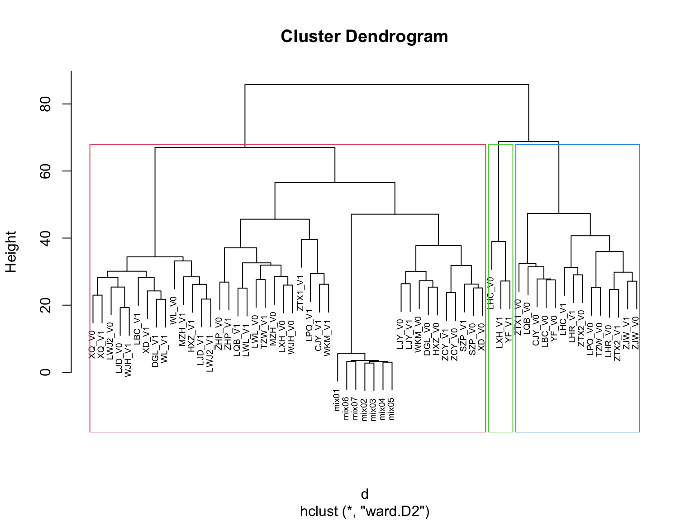
- Visualization: visualize the result in a scatter plot
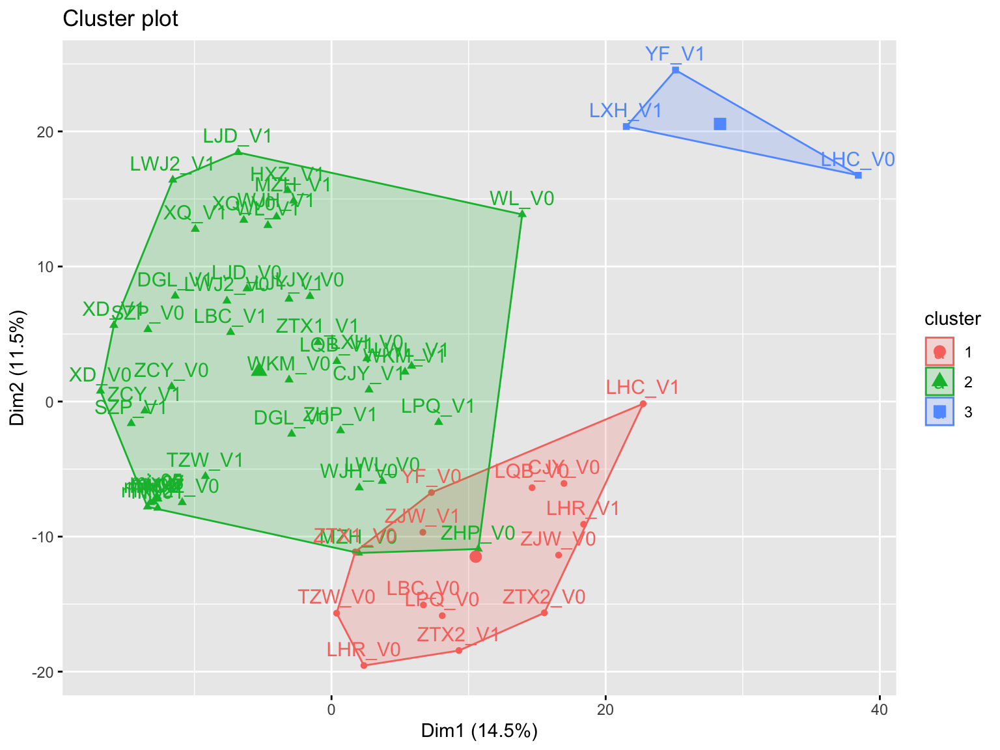
6.5 Chemometrics Analysis
6.5.1 Partial Least Squares-Discriminant Analysis (PLS-DA)
- Calculation
- scatter plot
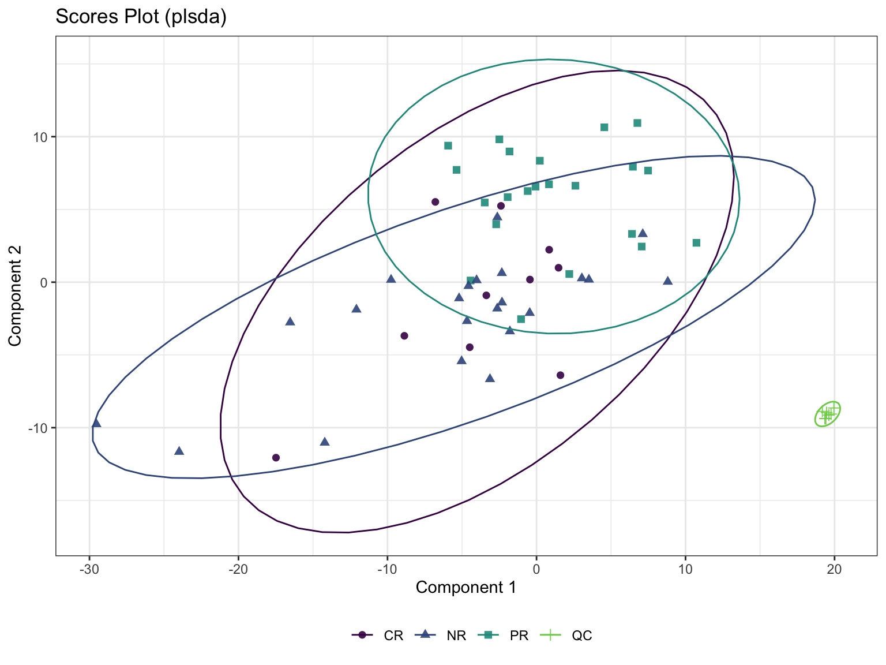
- errors plot
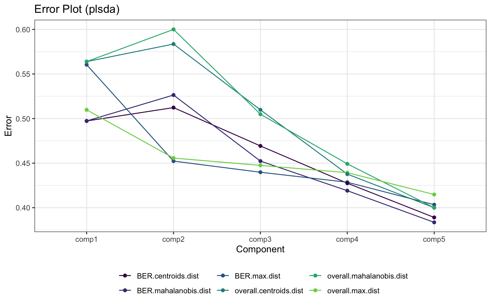
6.5.2 Sparse Partial Least Squares-Discriminant Analysis (sPLS-DA)
Even though PLS is highly efficient in a high dimensional context, the interpretability of PLS needed to be improved. sPLS has been recently developed by our team to perform simultaneous variable selection in both data sets X and Y data sets, by including LASSO penalizations in PLS on each pair of loading vectors
- Calculation
- scatter plot
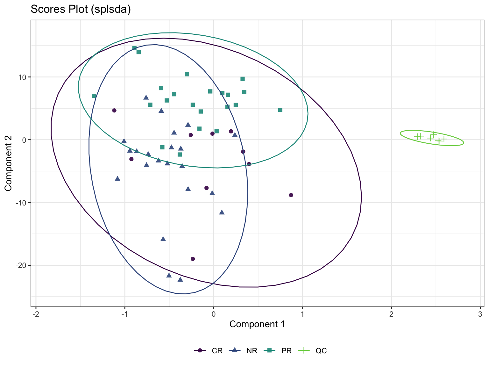
6.6 Univariate Analysis
6.6.1 Fold Change Analysis
- RawData (inputed data)
FoldChange <- function(
x,
group,
group_names) {
# dataseat
metadata <- SummarizedExperiment::colData(x) %>%
as.data.frame()
profile <- SummarizedExperiment::assay(x) %>%
as.data.frame()
colnames(metadata)[which(colnames(metadata) == group)] <- "CompVar"
phenotype <- metadata %>%
dplyr::filter(CompVar %in% group_names) %>%
dplyr::mutate(CompVar = as.character(CompVar)) %>%
dplyr::mutate(CompVar = factor(CompVar, levels = group_names))
sid <- intersect(rownames(phenotype), colnames(profile))
phen <- phenotype[pmatch(sid, rownames(phenotype)), , ]
prof <- profile %>%
dplyr::select(all_of(sid))
if (!all(colnames(prof) == rownames(phen))) {
stop("Wrong Order")
}
fc_res <- apply(prof, 1, function(x1, y1) {
dat <- data.frame(value = as.numeric(x1), group = y1)
mn <- tapply(dat$value, dat$group, function(x){
mean(x, na.rm = TRUE)
}) %>%
as.data.frame() %>%
stats::setNames("value") %>%
tibble::rownames_to_column("Group")
mn1 <- with(mn, mn[Group %in% group_names[1], "value"])
mn2 <- with(mn, mn[Group %in% group_names[2], "value"])
mnall <- mean(dat$value, na.rm = TRUE)
if (all(mn1 != 0, mn2 != 0)) {
fc <- mn1 / mn2
} else {
fc <- NA
}
logfc <- log2(fc)
res <- c(fc, logfc, mnall, mn1, mn2)
return(res)
}, phen$CompVar) %>%
base::t() %>% data.frame() %>%
tibble::rownames_to_column("Feature")
colnames(fc_res) <- c("FeatureID", "FoldChange",
"Log2FoldChange",
"Mean Abundance\n(All)",
paste0("Mean Abundance\n", c("former", "latter")))
# Number of Group
dat_status <- table(phen$CompVar)
dat_status_number <- as.numeric(dat_status)
dat_status_name <- names(dat_status)
fc_res$Block <- paste(paste(dat_status_number[1], dat_status_name[1], sep = "_"),
"vs",
paste(dat_status_number[2], dat_status_name[2], sep = "_"))
res <- fc_res %>%
dplyr::select(FeatureID, Block, everything())
return(res)
}
fc_res <- FoldChange(
x = se_impute,
group = "group",
group_names = c("NR", "PR"))
head(fc_res)## FeatureID Block FoldChange Log2FoldChange Mean Abundance\n(All) Mean Abundance\nformer Mean Abundance\nlatter
## 1 MEDL00066 22_NR vs 22_PR 0.3725103 -1.42464778 884972.39 480377.20 1289567.58
## 2 MEDL00356 22_NR vs 22_PR 0.2998209 -1.73782728 296756.21 136901.49 456610.93
## 3 MEDL00369 22_NR vs 22_PR 0.8976511 -0.15577325 57818.66 54700.24 60937.08
## 4 MEDL00375 22_NR vs 22_PR 1.1237471 0.16831736 391121.42 413911.40 368331.45
## 5 MEDL00392 22_NR vs 22_PR 1.6597914 0.73100193 169984.74 212151.38 127818.10
## 6 MEDL00401 22_NR vs 22_PR 0.9665848 -0.04903182 13670.47 13438.19 13902.756.6.2 VIP (Variable influence on projection & coefficient)
Variable influence on projection (VIP) for orthogonal projections to latent structures (OPLS)
Variable influence on projection (VIP) for projections to latent structures (PLS)
VIP_fun <- function(
x,
group,
group_names,
VIPtype = c("OPLS", "PLS"),
vip_cutoff = 1) {
metadata <- SummarizedExperiment::colData(x) %>%
as.data.frame()
profile <- SummarizedExperiment::assay(x) %>%
as.data.frame()
colnames(metadata)[which(colnames(metadata) == group)] <- "CompVar"
phenotype <- metadata %>%
dplyr::filter(CompVar %in% group_names) %>%
dplyr::mutate(CompVar = as.character(CompVar)) %>%
dplyr::mutate(CompVar = factor(CompVar, levels = group_names))
sid <- intersect(rownames(phenotype), colnames(profile))
phen <- phenotype[pmatch(sid, rownames(phenotype)), , ]
prof <- profile %>%
dplyr::select(all_of(sid))
if (!all(colnames(prof) == rownames(phen))) {
stop("Wrong Order")
}
dataMatrix <- prof %>% base::t() # row->sampleID; col->features
sampleMetadata <- phen # row->sampleID; col->features
comparsionVn <- sampleMetadata[, "CompVar"]
# corrlation between group and features
pvaVn <- apply(dataMatrix, 2,
function(feaVn) cor.test(as.numeric(comparsionVn), feaVn)[["p.value"]])
library(ropls)
if (VIPtype == "OPLS") {
vipVn <- getVipVn(opls(dataMatrix,
comparsionVn,
predI = 1,
orthoI = NA,
fig.pdfC = "none"))
} else {
vipVn <- getVipVn(opls(dataMatrix,
comparsionVn,
predI = 1,
fig.pdfC = "none"))
}
quantVn <- qnorm(1 - pvaVn / 2)
rmsQuantN <- sqrt(mean(quantVn^2))
opar <- par(font = 2, font.axis = 2, font.lab = 2,
las = 1,
mar = c(5.1, 4.6, 4.1, 2.1),
lwd = 2, pch = 16)
plot(pvaVn,
vipVn,
col = "red",
pch = 16,
xlab = "p-value", ylab = "VIP", xaxs = "i", yaxs = "i")
box(lwd = 2)
curve(qnorm(1 - x / 2) / rmsQuantN, 0, 1, add = TRUE, col = "red", lwd = 3)
abline(h = 1, col = "blue")
abline(v = 0.05, col = "blue")
res_temp <- data.frame(
FeatureID = names(vipVn),
VIP = vipVn,
CorPvalue = pvaVn) %>%
dplyr::arrange(desc(VIP))
vip_select <- res_temp %>%
dplyr::filter(VIP > vip_cutoff)
pl <- ggplot(vip_select, aes(FeatureID, VIP)) +
geom_segment(aes(x = FeatureID, xend = FeatureID,
y = 0, yend = VIP)) +
geom_point(shape = 21, size = 5, color = '#008000' ,fill = '#008000') +
geom_point(aes(1,2.5), color = 'white') +
geom_hline(yintercept = 1, linetype = 'dashed') +
scale_y_continuous(expand = c(0, 0)) +
labs(x = '', y = 'VIP value') +
theme_bw() +
theme(legend.position = 'none',
legend.text = element_text(color = 'black',size = 12, family = 'Arial', face = 'plain'),
panel.background = element_blank(),
panel.grid = element_blank(),
axis.text = element_text(color = 'black',size = 15, family = 'Arial', face = 'plain'),
axis.text.x = element_text(angle = 90),
axis.title = element_text(color = 'black',size = 15, family = 'Arial', face = 'plain'),
axis.ticks = element_line(color = 'black'),
axis.ticks.x = element_blank())
# Number of Group
dat_status <- table(phen$CompVar)
dat_status_number <- as.numeric(dat_status)
dat_status_name <- names(dat_status)
res_temp$Block <- paste(paste(dat_status_number[1], dat_status_name[1], sep = "_"),
"vs",
paste(dat_status_number[2], dat_status_name[2], sep = "_"))
res_df <- res_temp %>%
dplyr::select(FeatureID, Block, everything())
res <- list(vip = res_df,
plot = pl)
return(res)
}
vip_res <- VIP_fun(
x = se_normalize,
group = "group",
group_names = c("NR", "PR"),
VIPtype = "PLS",
vip_cutoff = 1)## PLS-DA
## 44 samples x 978 variables and 1 response
## standard scaling of predictors and response(s)
## R2X(cum) R2Y(cum) Q2(cum) RMSEE pre ort pR2Y pQ2
## Total 0.101 0.483 0.048 0.368 1 0 0.75 0.2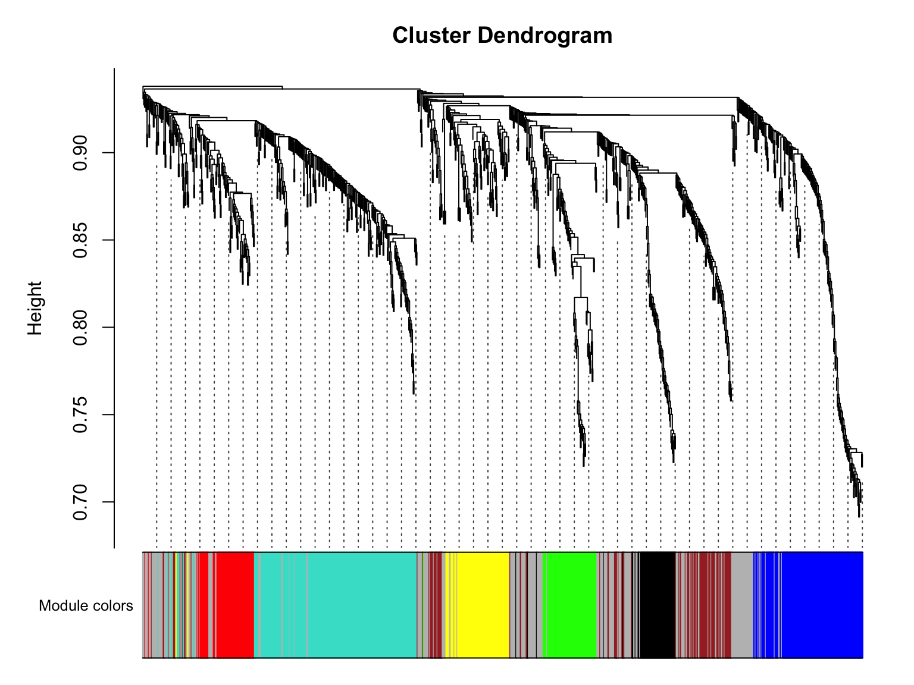
## FeatureID Block VIP CorPvalue
## MEDP0151 MEDP0151 22_NR vs 22_PR 2.903799 0.0001855852
## MEDP1276 MEDP1276 22_NR vs 22_PR 2.903799 0.0001855852
## MEDP1177 MEDP1177 22_NR vs 22_PR 2.885603 0.0002072022
## MEDP1040 MEDP1040 22_NR vs 22_PR 2.881680 0.0002121518
## MW0166596 MW0166596 22_NR vs 22_PR 2.712717 0.0005586171
## MW0168376 MW0168376 22_NR vs 22_PR 2.673082 0.0006919501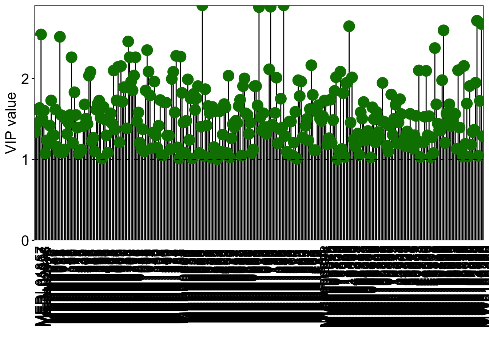
6.6.3 T-test by local codes
- significant differences between two groups (p value)
t_fun <- function(
x,
group,
group_names) {
# dataseat
metadata <- SummarizedExperiment::colData(x) %>%
as.data.frame()
profile <- SummarizedExperiment::assay(x) %>%
as.data.frame()
# rename variables
colnames(metadata)[which(colnames(metadata) == group)] <- "CompVar"
phenotype <- metadata %>%
dplyr::filter(CompVar %in% group_names) %>%
dplyr::mutate(CompVar = as.character(CompVar)) %>%
dplyr::mutate(CompVar = factor(CompVar, levels = group_names))
sid <- intersect(rownames(phenotype), colnames(profile))
phen <- phenotype[pmatch(sid, rownames(phenotype)), , ]
prof <- profile %>%
dplyr::select(all_of(sid))
if (!all(colnames(prof) == rownames(phen))) {
stop("Wrong Order")
}
t_res <- apply(prof, 1, function(x1, y1) {
dat <- data.frame(value = as.numeric(x1), group = y1)
rest <- t.test(data = dat, value ~ group)
res <- c(rest$statistic, rest$p.value)
return(res)
}, phen$CompVar) %>%
base::t() %>% data.frame() %>%
tibble::rownames_to_column("Feature")
colnames(t_res) <- c("FeatureID", "Statistic", "Pvalue")
t_res$AdjustedPvalue <- p.adjust(as.numeric(t_res$Pvalue), method = "BH")
# Number of Group
dat_status <- table(phen$CompVar)
dat_status_number <- as.numeric(dat_status)
dat_status_name <- names(dat_status)
t_res$Block <- paste(paste(dat_status_number[1], dat_status_name[1], sep = "_"),
"vs",
paste(dat_status_number[2], dat_status_name[2], sep = "_"))
res <- t_res %>%
dplyr::select(FeatureID, Block, everything())
return(res)
}
ttest_res <- t_fun(
x = se_normalize,
group = "group",
group_names = c("NR", "PR"))
head(ttest_res)## FeatureID Block Statistic Pvalue AdjustedPvalue
## 1 MEDL00066 22_NR vs 22_PR -0.7561238 0.4541166 0.8276388
## 2 MEDL00356 22_NR vs 22_PR -0.6643555 0.5102652 0.8479872
## 3 MEDL00369 22_NR vs 22_PR 0.6039380 0.5493194 0.8636438
## 4 MEDL00375 22_NR vs 22_PR -0.6759149 0.5030887 0.8449287
## 5 MEDL00392 22_NR vs 22_PR 1.1826181 0.2436510 0.7285392
## 6 MEDL00401 22_NR vs 22_PR -0.2537679 0.8010020 0.93930456.6.4 Merging result
Foldchange by Raw Data
VIP by Normalized Data
test Pvalue by Normalized Data
mergedResults <- function(
fc_result,
vip_result,
test_result,
group_names,
group_labels) {
if (is.null(vip_result)) {
mdat <- fc_result %>%
dplyr::mutate(Block2 = paste(group_labels, collapse = " vs ")) %>%
dplyr::mutate(FeatureID = make.names(FeatureID)) %>%
dplyr::select(-all_of(c("Mean Abundance\n(All)",
"Mean Abundance\nformer",
"Mean Abundance\nlatter"))) %>%
dplyr::inner_join(test_result %>%
dplyr::select(-Block) %>%
dplyr::mutate(FeatureID = make.names(FeatureID)),
by = "FeatureID")
res <- mdat %>%
dplyr::select(FeatureID, Block2, Block,
FoldChange, Log2FoldChange,
Statistic, Pvalue, AdjustedPvalue,
everything()) %>%
dplyr::arrange(AdjustedPvalue, Log2FoldChange)
} else {
mdat <- fc_result %>%
dplyr::mutate(Block2 = paste(group_labels, collapse = " vs ")) %>%
dplyr::mutate(FeatureID = make.names(FeatureID)) %>%
dplyr::select(-all_of(c("Mean Abundance\n(All)",
"Mean Abundance\nformer",
"Mean Abundance\nlatter"))) %>%
dplyr::inner_join(vip_result %>%
dplyr::select(-Block) %>%
dplyr::mutate(FeatureID = make.names(FeatureID)),
by = "FeatureID") %>%
dplyr::inner_join(test_result %>%
dplyr::select(-Block) %>%
dplyr::mutate(FeatureID = make.names(FeatureID)),
by = "FeatureID")
res <- mdat %>%
dplyr::select(FeatureID, Block2, Block,
FoldChange, Log2FoldChange,
VIP, CorPvalue,
Statistic, Pvalue, AdjustedPvalue,
everything()) %>%
dplyr::arrange(AdjustedPvalue, Log2FoldChange)
}
return(res)
}
m_results <- mergedResults(
fc_result = fc_res,
vip_result = vip_res$vip,
test_result = ttest_res,
group_names = c("NR", "PR"),
group_labels = c("NR", "PR"))
head(m_results)## FeatureID Block2 Block FoldChange Log2FoldChange VIP CorPvalue Statistic Pvalue AdjustedPvalue
## 1 MEDP0151 NR vs PR 22_NR vs 22_PR 0.06937088 -3.849526 2.903799 0.0001855852 -4.099188 0.0002012845 0.05342607
## 2 MEDP1276 NR vs PR 22_NR vs 22_PR 0.06937088 -3.849526 2.903799 0.0001855852 -4.099188 0.0002012845 0.05342607
## 3 MEDP1177 NR vs PR 22_NR vs 22_PR 0.17373447 -2.525044 2.885603 0.0002072022 -4.063360 0.0002078791 0.05342607
## 4 MEDP1040 NR vs PR 22_NR vs 22_PR 0.25634493 -1.963842 2.881680 0.0002121518 -4.055669 0.0002185115 0.05342607
## 5 MW0166596 NR vs PR 22_NR vs 22_PR 0.34037949 -1.554784 2.712717 0.0005586171 -3.735517 0.0005936658 0.11612104
## 6 MW0168376 NR vs PR 22_NR vs 22_PR 0.28801993 -1.795759 2.673082 0.0006919501 -3.663326 0.0007354806 0.119883346.6.5 Volcano of Merged Results
get_volcano <- function(
inputdata,
group_names,
group_labels,
group_colors,
x_index,
x_cutoff,
y_index,
y_cutoff,
plot = TRUE) {
selected_group2 <- paste(group_labels, collapse = " vs ")
dat <- inputdata %>%
dplyr::filter(Block2 %in% selected_group2)
plotdata <- dat %>%
dplyr::mutate(FeatureID = paste(FeatureID, sep = ":")) %>%
dplyr::select(all_of(c("FeatureID", "Block2", x_index, y_index)))
if (!any(colnames(plotdata) %in% "TaxaID")) {
colnames(plotdata)[1] <- "TaxaID"
}
if (y_index == "CorPvalue") {
colnames(plotdata)[which(colnames(plotdata) == y_index)] <- "Pvalue"
y_index <- "Pvalue"
}
pl <- plot_volcano(
da_res = plotdata,
group_names = group_labels,
x_index = x_index,
x_index_cutoff = x_cutoff,
y_index = y_index,
y_index_cutoff = y_cutoff,
group_color = c(group_colors[1], "grey", group_colors[2]))
if (plot) {
res <- pl
} else {
colnames(plotdata)[which(colnames(plotdata) == x_index)] <- "Xindex"
colnames(plotdata)[which(colnames(plotdata) == y_index)] <- "Yindex"
datsignif <- plotdata %>%
dplyr::filter(abs(Xindex) > x_cutoff) %>%
dplyr::filter(Yindex < y_cutoff)
colnames(datsignif)[which(colnames(datsignif) == "Xindex")] <- x_index
colnames(datsignif)[which(colnames(datsignif) == "Yindex")] <- y_index
res <- list(figure = pl,
data = datsignif)
}
return(res)
}
lgfc_FDR_vol <- get_volcano(
inputdata = m_results,
group_names = c("NR", "PR"),
group_labels = c("NR", "PR"),
group_colors = c("red", "blue"),
x_index = "Log2FoldChange",
x_cutoff = 0.5,
y_index = "AdjustedPvalue",
y_cutoff = 0.5,
plot = FALSE)
lgfc_FDR_vol$figure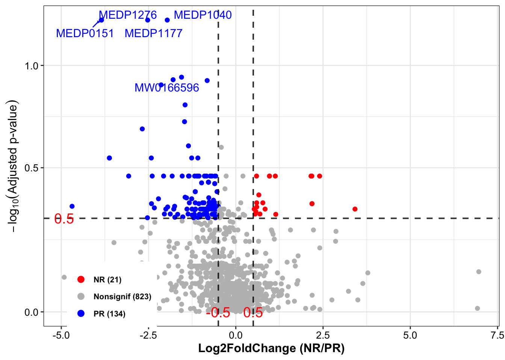
6.6.6 T Test
group_names <- c("NR", "PR")
se_normalize_subset <- se_normalize[, se_normalize$group %in% group_names]
se_normalize_subset$group <- factor(as.character(se_normalize_subset$group))
ttest_res <- PomaUnivariate(se_normalize_subset, method = "ttest")
head(ttest_res)## # A tibble: 6 × 9
## feature FC diff_means pvalue pvalueAdj mean_NR mean_PR sd_NR sd_PR
## <chr> <dbl> <dbl> <dbl> <dbl> <dbl> <dbl> <dbl> <dbl>
## 1 MEDL00066 0.215 0.201 0.454 0.828 -0.255 -0.0548 0.749 0.994
## 2 MEDL00356 0.309 0.151 0.510 0.848 -0.218 -0.0675 0.665 0.830
## 3 MEDL00369 -0.936 -0.131 0.549 0.864 0.0676 -0.0633 0.626 0.800
## 4 MEDL00375 -0.436 0.151 0.503 0.845 -0.105 0.0459 0.838 0.629
## 5 MEDL00392 -5.65 -0.279 0.244 0.729 0.0419 -0.237 0.811 0.751
## 6 MEDL00401 1.81 0.024 0.801 0.939 0.0295 0.0533 0.266 0.3506.7 Feature Selection
6.7.1 Regularized Generalized Linear Models (Lasso: alpha = 1)
lasso_res <- PomaLasso(se_normalize_subset, alpha = 1, labels = TRUE)
cowplot::plot_grid(lasso_res$cvLassoPlot,
lasso_res$coefficientPlot,
ncol = 2, align = "h")
## # A tibble: 22 × 2
## feature coefficient
## <chr> <dbl>
## 1 (Intercept) 0.00959
## 2 MEDN0366 -0.427
## 3 MEDN0411 -0.0107
## 4 MEDN0490 -0.316
## 5 MEDN1135 0.485
## 6 MEDN1285 -0.00470
## 7 MEDP0006 0.265
## 8 MEDP1040 1.71
## 9 MEDP1170 1.23
## 10 MEDP1177 1.47
## # ℹ 12 more rows
6.8 Network Analysis
6.8.1 Data curation
features_tab <- SummarizedExperiment::assay(se_filter) %>%
t()
features_tab[is.na(features_tab)] <- 0
print(features_tab[1:6, 1:10])## MEDL00066 MEDL00375 MEDL00392 MEDL00568 MEDL00587 MEDL01764 MEDL01799 MEDL01837 MEDL01844 MEDL01922
## CJY_V0 10447 31087 238370.00 10248.00 618200 113031.3 335795.7 801660 127250 309560.3
## CJY_V1 4011900 88306 260320.00 96595.00 563130 233660.0 51267.0 830010 4172100 107560.0
## DGL_V0 560560 449150 250350.00 78849.00 1079300 109130.2 304040.0 739880 19462000 39149.0
## DGL_V1 149120 263050 21585.00 44336.38 2047500 277960.0 24342.0 866470 14373000 964600.0
## HXZ_V0 442540 216830 480800.00 134607.77 1399700 2022600.0 1481800.0 842220 7830000 269570.0
## HXZ_V1 181010 37280 91366.73 69526.92 1171700 12301.0 166435.5 735560 5171400 196770.06.8.3 Visualizing the network
props_single <- netAnalyze(net_single, clustMethod = "cluster_fast_greedy")
plot(props_single,
nodeColor = "cluster",
nodeSize = "eigenvector",
repulsion = 0.8,
rmSingles = TRUE,
labelScale = FALSE,
cexLabels = 1.6,
nodeSizeSpread = 3,
cexNodes = 2,
title1 = "Network on metabolomics with Pearson correlations",
showTitle = TRUE,
cexTitle = 1.5)
legend(0.7, 1.1, cex = 1.2, title = "estimated correlation:",
legend = c("+","-"), lty = 1, lwd = 3, col = c("#009900","red"),
bty = "n", horiz = TRUE)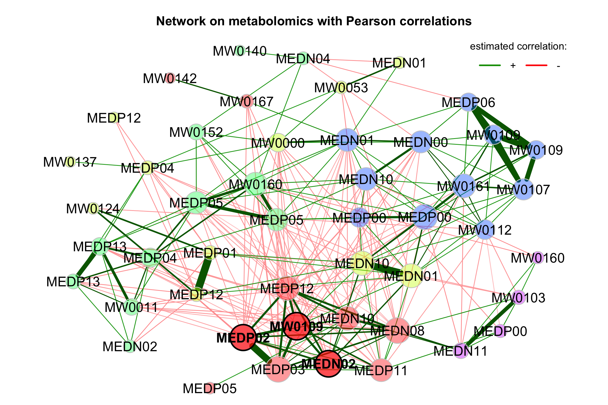
6.9 Network Analysis by WGCNA
Performing Network Analysis step by step through WGCNA R package.
6.9.1 Data curation
Data Matrix
Row -> metabolites
Column -> samples
## CJY_V0 CJY_V1 DGL_V0 DGL_V1 HXZ_V0 HXZ_V1 LBC_V0 LBC_V1 LHC_V1 LHC_V0
## MEDL00066 10447.00 4011900.00 560560 149120.00 442540 181010.00 12620.0 173400.00 97848.0 7682.475
## MEDL00356 50530.92 38175.58 71717 128990.00 162090 106800.00 8524300.0 61881.00 88503.0 21030.000
## MEDL00369 40739.79 85573.00 36339 50110.28 135600 26164.00 7287.5 11808.00 86864.6 34776.883
## MEDL00375 31087.00 88306.00 449150 263050.00 216830 37280.00 302150.0 607850.00 87101.0 7595.700
## MEDL00392 238370.00 260320.00 250350 21585.00 480800 91366.73 225860.0 53617.11 809940.0 9993.000
## MEDL00401 12589.00 12590.00 15954 16425.00 14961 8432.20 16545.0 9618.60 20929.0 12400.000- Data normalization
# TSS
features_tab_norm <- XMAS2::norm_tss(phyloseq::otu_table(features_tab, taxa_are_rows = T)) %>%
data.frame() %>% t()
print(features_tab_norm[1:6, 1:10])## MEDL00066 MEDL00356 MEDL00369 MEDL00375 MEDL00392 MEDL00401 MEDL00404 MEDL00416 MEDL00568 MEDL00587
## CJY_V0 7.044680e-06 3.407429e-05 2.747189e-05 2.096276e-05 1.607390e-04 8.489085e-06 2.581116e-04 1.401990e-05 6.910489e-06 0.0004168681
## CJY_V1 1.930100e-03 1.836604e-05 4.116864e-05 4.248347e-05 1.252383e-04 6.056971e-06 9.460709e-06 7.009055e-05 4.647125e-05 0.0002709183
## DGL_V0 1.373244e-04 1.756903e-05 8.902225e-06 1.100315e-04 6.133003e-05 3.908366e-06 6.912275e-06 6.819184e-06 1.931620e-05 0.0002644038
## DGL_V1 3.576173e-05 3.093418e-05 1.201737e-05 6.308424e-05 5.176481e-06 3.939018e-06 1.145229e-05 1.549515e-05 1.063268e-05 0.0004910283
## HXZ_V0 1.046211e-04 3.831977e-05 3.205725e-05 5.126087e-05 1.136661e-04 3.536936e-06 2.507133e-05 6.972689e-06 3.182268e-05 0.0003309037
## HXZ_V1 5.993074e-05 3.536049e-05 8.662658e-06 1.234306e-05 3.025068e-05 2.791823e-06 2.311676e-06 3.888661e-05 2.301972e-05 0.00038793906.9.2 Tuning soft thresholds
Picking a threshhold value (if correlation is below threshold, remove the edge). WGCNA will try a range of soft thresholds and create a diagnostic plot.
- Choose a set of soft-thresholding powers
Call the network topology analysis function
Row -> samples
Column -> metabolites
sft <- pickSoftThreshold(
features_tab_norm,
powerVector = powers,
networkType = "unsigned",
verbose = 2)## pickSoftThreshold: will use block size 978.
## pickSoftThreshold: calculating connectivity for given powers...
## ..working on genes 1 through 978 of 978
## Power SFT.R.sq slope truncated.R.sq mean.k. median.k. max.k.
## 1 1 0.236 -0.883 0.803 138.00 131.000 228.0
## 2 2 0.724 -1.560 0.655 40.30 32.500 116.0
## 3 3 0.820 -1.520 0.787 19.00 12.300 83.3
## 4 4 0.843 -1.420 0.834 11.70 6.020 66.8
## 5 5 0.872 -1.350 0.877 8.29 3.570 56.5
## 6 6 0.906 -1.290 0.921 6.39 2.420 49.3
## 7 7 0.919 -1.250 0.938 5.19 1.760 44.0
## 8 8 0.876 -1.240 0.887 4.36 1.320 39.8
## 9 9 0.880 -1.230 0.880 3.76 1.090 36.4
## 10 10 0.923 -1.210 0.942 3.30 0.934 33.6
## 11 12 0.944 -1.200 0.959 2.64 0.674 29.3
## 12 14 0.970 -1.200 0.982 2.20 0.507 26.0
## 13 16 0.917 -1.230 0.908 1.88 0.354 23.3
## 14 18 0.949 -1.240 0.945 1.63 0.261 21.1
## 15 20 0.948 -1.250 0.943 1.45 0.180 19.3- the optimal power value
par(mfrow = c(1, 2))
cex1 = 1.2
plot(sft$fitIndices[, 1],
-sign(sft$fitIndices[, 3]) * sft$fitIndices[, 2],
xlab = "Soft Threshold (power)",
ylab = "Scale Free Topology Model Fit, signed R^2",
main = paste("Scale independence")
)
text(sft$fitIndices[, 1],
-sign(sft$fitIndices[, 3]) * sft$fitIndices[, 2],
labels = powers, cex = cex1, col = "red"
)
abline(h = 0.90, col = "red")
plot(sft$fitIndices[, 1],
sft$fitIndices[, 5],
xlab = "Soft Threshold (power)",
ylab = "Mean Connectivity",
type = "n",
main = paste("Mean connectivity")
)
text(sft$fitIndices[, 1],
sft$fitIndices[, 5],
labels = powers,
cex = cex1, col = "red")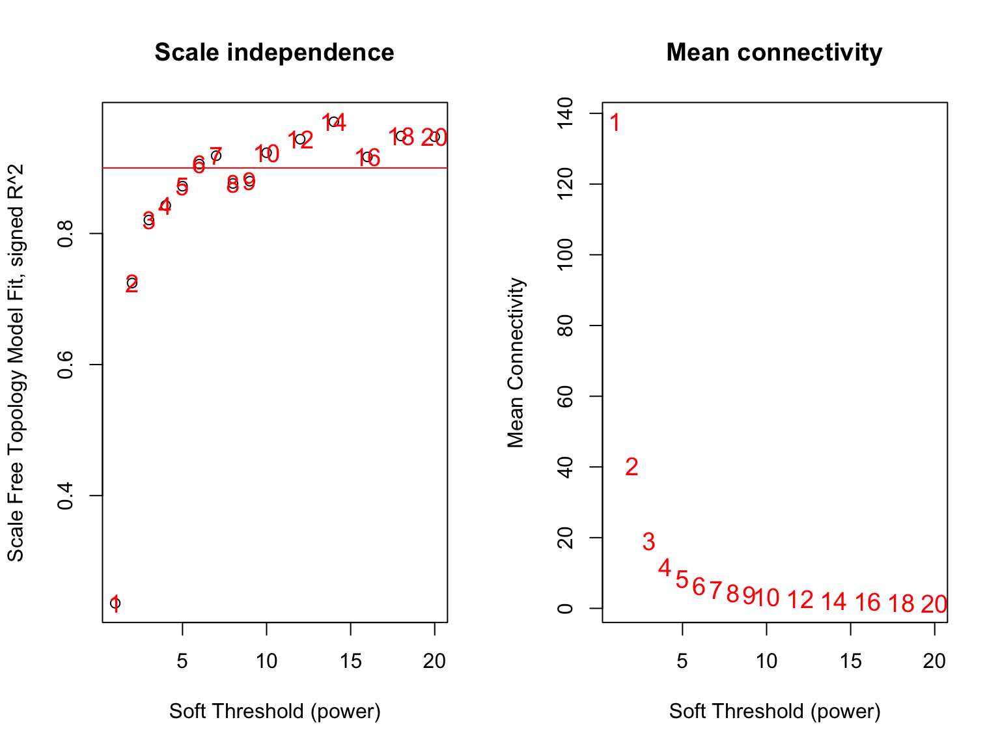
Notice: We’ pick 5 but feel free to experiment with other powers to see how it affects your results.
6.9.3 Create the network using the blockwiseModules
- building network
picked_power <- 5
# temp_cor <- cor
# cor <- WGCNA::cor
netwk <- blockwiseModules(features_tab_norm,
# == Adjacency Function ==
power = picked_power, # <= power here
networkType = "signed",
# == Network construction arguments: correlation options
corType = "bicor",
maxPOutliers = 0.05,
# == Tree and Block Options ==
deepSplit = 2,
pamRespectsDendro = F,
minModuleSize = 20,
maxBlockSize = 4000,
# == Module Adjustments ==
reassignThreshold = 0,
mergeCutHeight = 0.25,
# == TOM == Archive the run results in TOM file (saves time)
saveTOMs = T,
saveTOMFileBase = paste0("./dataset/", "GvHD"),
# == Output Options
numericLabels = T,
verbose = 3,
randomSeed = 123)## Calculating module eigengenes block-wise from all genes
## Flagging genes and samples with too many missing values...
## ..step 1
## ..Working on block 1 .
## TOM calculation: adjacency..
## ..will not use multithreading.
## Fraction of slow calculations: 0.000000
## ..connectivity..
## ..matrix multiplication (system BLAS)..
## ..normalization..
## ..done.
## ..saving TOM for block 1 into file ./dataset/GvHD-block.1.RData
## ....clustering..
## ....detecting modules..
## ....calculating module eigengenes..
## ....checking kME in modules..
## ..removing 19 genes from module 1 because their KME is too low.
## ..removing 113 genes from module 2 because their KME is too low.
## ..removing 32 genes from module 3 because their KME is too low.
## ..removing 45 genes from module 4 because their KME is too low.
## ..removing 4 genes from module 5 because their KME is too low.
## ..removing 17 genes from module 6 because their KME is too low.
## ..removing 1 genes from module 7 because their KME is too low.
## ..merging modules that are too close..
## mergeCloseModules: Merging modules whose distance is less than 0.25
## Calculating new MEs...- Modules’ number
##
## 0 1 2 3 4 5 6 7
## 231 224 139 96 86 73 71 58- hubs
rownames(netwk$MEs) <- rownames(features_tab_norm)
names(netwk$colors) <- colnames(features_tab_norm)
names(netwk$unmergedColors) <- colnames(features_tab_norm)
hubs <- chooseTopHubInEachModule(features_tab_norm, netwk$colors)
hubs## 0 1 2 3 4 5 6 7
## "MW0146102" "MW0155806" "MEDL02751" "MEDP1201" "MW0145567" "MEDP1033" "MW0156874" "MEDP0434"- The number of features per module
table(netwk$colors) %>%
data.frame() %>%
dplyr::rename(Module = Var1, Number = Freq) %>%
dplyr::mutate(Module_color = labels2colors(as.numeric(as.character(Module)))) %>%
ggplot(aes(x = Module, y = Number, fill = Module)) +
geom_text(aes(label = Number), vjust = 0.5, hjust = -0.18, size = 3.5) +
geom_col(color = "#000000") +
ggtitle("Number of features per module") +
coord_flip() +
scale_y_continuous(expand = c(0, 0)) +
theme_classic() +
theme(plot.margin = margin(2, 2, 2, 2, "pt"),
plot.title = element_text(size = 14, hjust = 0.5, face = "bold"),
legend.position = "none")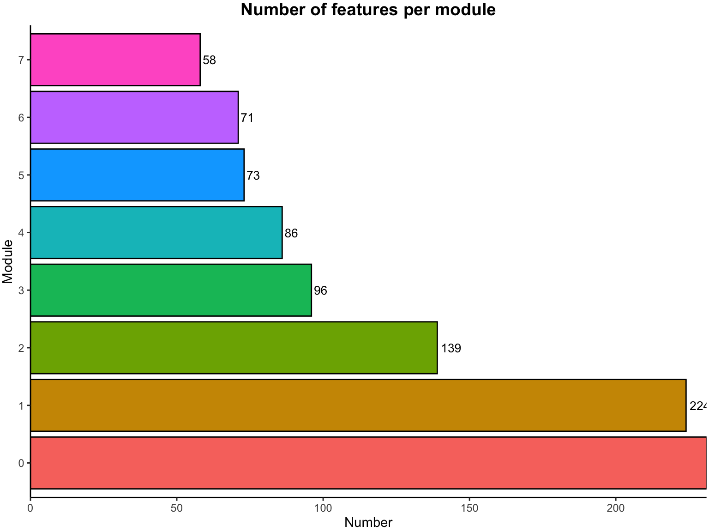
6.9.4 plot modules
mergedColors <- labels2colors(netwk$colors)
plotDendroAndColors(
netwk$dendrograms[[1]],
mergedColors[netwk$blockGenes[[1]]],
"Module colors",
dendroLabels = FALSE,
hang = 0.03,
addGuide = TRUE,
guideHang = 0.05 )
6.9.5 Relationships among modules
plotEigengeneNetworks(netwk$MEs,
"Eigengene adjacency heatmap",
marDendro = c(3, 3, 2, 4),
marHeatmap = c(3, 4, 2, 2),
plotDendrograms = T,
xLabelsAngle = 90)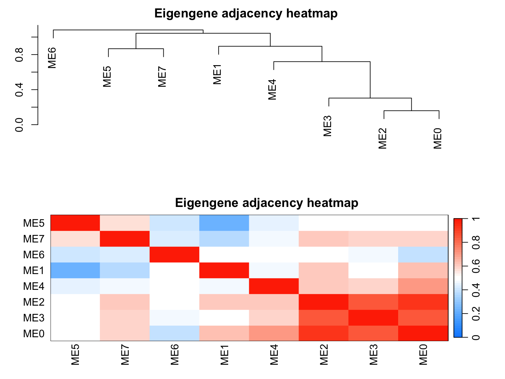
6.9.6 Module (Eigengene) correlation
MEs <- netwk$MEs
MEs_R <- bicor(MEs, MEs, maxPOutliers = 0.05)
idx.r <- which(rownames(MEs_R) == "ME0")
idx.c <- which(colnames(MEs_R) == "ME0")
MEs_R_noME0 <- MEs_R[-idx.r, -idx.c]
MEs_R_density <- MEs_R[upper.tri(MEs_R_noME0)] %>%
as.data.frame() %>%
dplyr::rename("correlation" = ".") %>%
ggplot(aes(x=correlation)) +
geom_density() +
ggtitle(paste0("ME correlation density\n without ", "ME0"))
MEs_R_Corr <- pheatmap::pheatmap(MEs_R, color = colorRampPalette(c("Blue", "White", "Red"))(100),
silent = T,
breaks = seq(-1,1,length.out = 101),
treeheight_row = 5,
treeheight_col = 5,
main = paste0("ME correlation heatmap"),
labels_row = rownames(MEs_R),
labels_col = colnames(MEs_R))
cowplot::plot_grid(MEs_R_density, MEs_R_Corr$gtable,
labels = c("A", "B"),
label_size = 15,
rel_widths = c(0.6, 1),
align = "h") 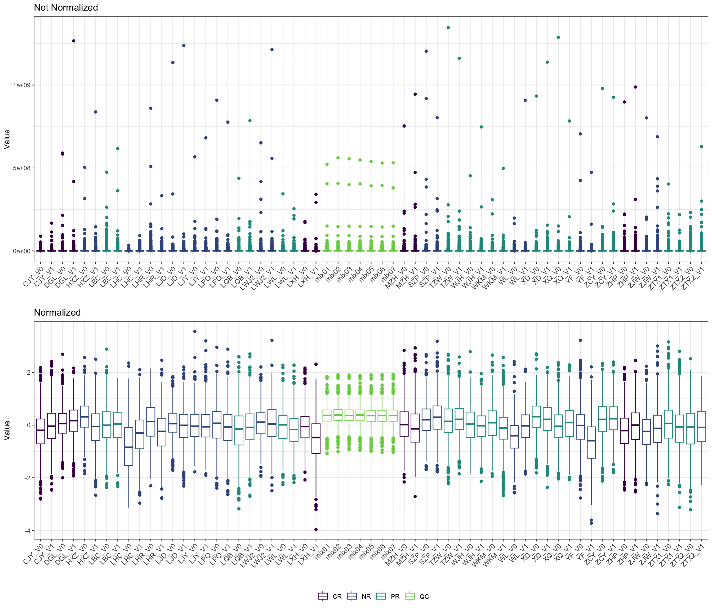
6.9.7 Relate Module (cluster) Assignments to Groups
module_df <- data.frame(
featureID = names(netwk$colors),
colors = labels2colors(netwk$colors)
)
# Get Module Eigengenes per cluster
MEs0 <- moduleEigengenes(features_tab_norm, mergedColors)$eigengenes
# Reorder modules so similar modules are next to each other
MEs0 <- orderMEs(MEs0)
module_order <- names(MEs0) %>% gsub("ME","", .)
# Add group names
MEs0$group <- paste0(se_impute$group, rownames(colData(se_impute))) # row.names(MEs0) == rownames(colData(se_impute))
# tidy & plot data
mME <- MEs0 %>%
tidyr::pivot_longer(-group) %>%
mutate(
name = gsub("ME", "", name),
name = factor(name, levels = module_order)
)
mME %>% ggplot(., aes(x=group, y=name, fill=value)) +
geom_tile() +
labs(title = "Module-samples Relationships", y = "Modules", fill = "corr") +
scale_fill_gradient2(
low = "blue",
high = "red",
mid = "white",
midpoint = 0,
limit = c(-1,1)) +
theme_bw() +
theme(axis.text.x = element_text(angle = 90))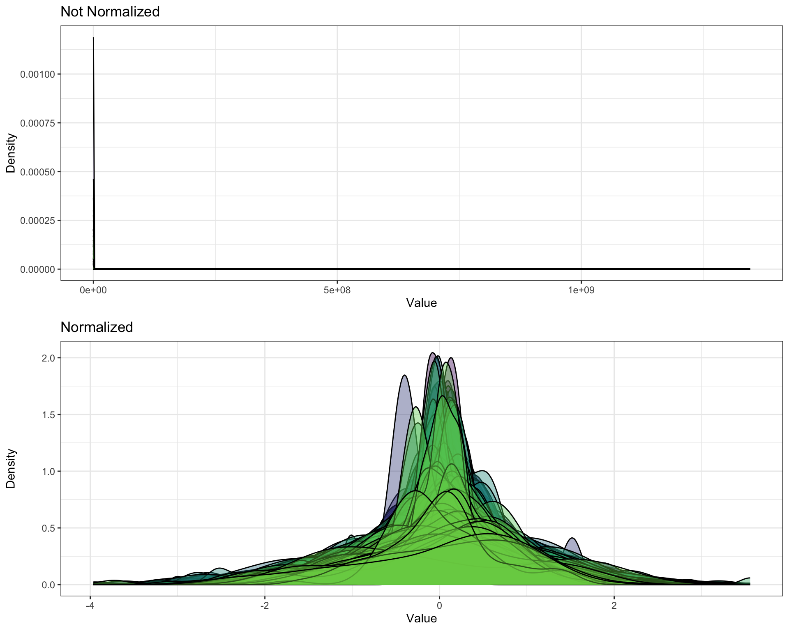
Result:
- the black modules seems negatively associated (red shading) with the PR groups.
6.9.8 Generate and Export Networks
# modules_of_interest <- c("green", "brown", "black")
#
# genes_of_interest <- module_df %>%
# subset(colors %in% modules_of_interest)
#
# expr_of_interest <- features_tab_norm[, genes_of_interest$featureID]
#
# # Only recalculate TOM for modules of interest
# TOM <- TOMsimilarityFromExpr(expr_of_interest,
# power = picked_power)
#
# # Add feature id to row and columns
# rownames(TOM) <- colnames(expr_of_interest)
# colnames(TOM) <- colnames(expr_of_interest)
#
# edge_list <- data.frame(TOM) %>%
# tibble::rownames_to_column("featureID") %>%
# tidyr::pivot_longer(-featureID) %>%
# dplyr::rename(featureID2 = name, correlation = value) %>%
# unique() %>%
# subset(!(featureID == featureID2)) %>%
# dplyr::mutate(
# module1 = module_df[featureID, ]$colors,
# module2 = module_df[featureID2, ]$colors)
#
# head(edge_list)6.9.9 Network visualization
library(igraph)
strength_adjust <- 1
TOM <- TOMsimilarityFromExpr(features_tab_norm,
power = picked_power)## TOM calculation: adjacency..
## ..will not use multithreading.
## Fraction of slow calculations: 0.000000
## ..connectivity..
## ..matrix multiplication (system BLAS)..
## ..normalization..
## ..done.# Add feature id to row and columns
rownames(TOM) <- colnames(features_tab_norm)
colnames(TOM) <- colnames(features_tab_norm)
g <- graph.adjacency(TOM, mode="undirected", weighted= TRUE)
delete.edges(g, which(E(g)$weight <1))## IGRAPH d50076b UNW- 978 978 --
## + attr: name (v/c), weight (e/n)
## + edges from d50076b (vertex names):
## [1] MEDL00066--MEDL00066 MEDL00356--MEDL00356 MEDL00369--MEDL00369 MEDL00375--MEDL00375 MEDL00392--MEDL00392 MEDL00401--MEDL00401
## [7] MEDL00404--MEDL00404 MEDL00416--MEDL00416 MEDL00568--MEDL00568 MEDL00587--MEDL00587 MEDL01764--MEDL01764 MEDL01799--MEDL01799
## [13] MEDL01837--MEDL01837 MEDL01844--MEDL01844 MEDL01857--MEDL01857 MEDL01867--MEDL01867 MEDL01879--MEDL01879 MEDL01922--MEDL01922
## [19] MEDL01994--MEDL01994 MEDL01999--MEDL01999 MEDL02002--MEDL02002 MEDL02018--MEDL02018 MEDL02044--MEDL02044 MEDL02106--MEDL02106
## [25] MEDL02174--MEDL02174 MEDL02177--MEDL02177 MEDL02187--MEDL02187 MEDL02519--MEDL02519 MEDL02561--MEDL02561 MEDL02562--MEDL02562
## [31] MEDL02582--MEDL02582 MEDL02630--MEDL02630 MEDL02681--MEDL02681 MEDL02751--MEDL02751 MEDN0004 --MEDN0004 MEDN0005 --MEDN0005
## [37] MEDN0006 --MEDN0006 MEDN0007 --MEDN0007 MEDN0010 --MEDN0010 MEDN0015 --MEDN0015 MEDN0018 --MEDN0018 MEDN0025 --MEDN0025
## [43] MEDN0027 --MEDN0027 MEDN0028 --MEDN0028 MEDN0032 --MEDN0032 MEDN0036 --MEDN0036 MEDN0041 --MEDN0041 MEDN0042 --MEDN0042
## + ... omitted several edges6.10 Systematic Information
## ─ Session info ──────────────────────────────────────────────────────────────────────────────────────────────────────────────────────────
## setting value
## version R version 4.1.3 (2022-03-10)
## os macOS Monterey 12.2.1
## system x86_64, darwin17.0
## ui RStudio
## language (EN)
## collate en_US.UTF-8
## ctype en_US.UTF-8
## tz Asia/Shanghai
## date 2023-11-23
## rstudio 2023.09.0+463 Desert Sunflower (desktop)
## pandoc 3.1.1 @ /Applications/RStudio.app/Contents/Resources/app/quarto/bin/tools/ (via rmarkdown)
##
## ─ Packages ──────────────────────────────────────────────────────────────────────────────────────────────────────────────────────────────
## package * version date (UTC) lib source
## abind 1.4-5 2016-07-21 [2] CRAN (R 4.1.0)
## ade4 1.7-22 2023-02-06 [2] CRAN (R 4.1.2)
## affy 1.72.0 2021-10-26 [2] Bioconductor
## affyio 1.64.0 2021-10-26 [2] Bioconductor
## annotate 1.72.0 2021-10-26 [2] Bioconductor
## AnnotationDbi * 1.60.2 2023-03-10 [2] Bioconductor
## ape 5.7-1 2023-03-13 [2] CRAN (R 4.1.2)
## aplot 0.1.10 2023-03-08 [2] CRAN (R 4.1.2)
## attempt 0.3.1 2020-05-03 [2] CRAN (R 4.1.0)
## backports 1.4.1 2021-12-13 [2] CRAN (R 4.1.0)
## base64enc 0.1-3 2015-07-28 [2] CRAN (R 4.1.0)
## Biobase * 2.54.0 2021-10-26 [2] Bioconductor
## BiocGenerics * 0.40.0 2021-10-26 [2] Bioconductor
## BiocManager 1.30.21 2023-06-10 [2] CRAN (R 4.1.3)
## BiocParallel 1.28.3 2021-12-09 [2] Bioconductor
## biomformat 1.22.0 2021-10-26 [2] Bioconductor
## Biostrings 2.62.0 2021-10-26 [2] Bioconductor
## bit 4.0.5 2022-11-15 [2] CRAN (R 4.1.2)
## bit64 4.0.5 2020-08-30 [2] CRAN (R 4.1.0)
## bitops 1.0-7 2021-04-24 [2] CRAN (R 4.1.0)
## blob 1.2.4 2023-03-17 [2] CRAN (R 4.1.2)
## bookdown 0.34 2023-05-09 [2] CRAN (R 4.1.2)
## broom 1.0.5 2023-06-09 [2] CRAN (R 4.1.3)
## bslib 0.5.0 2023-06-09 [2] CRAN (R 4.1.3)
## cachem 1.0.8 2023-05-01 [2] CRAN (R 4.1.2)
## Cairo 1.6-0 2022-07-05 [2] CRAN (R 4.1.2)
## callr 3.7.3 2022-11-02 [2] CRAN (R 4.1.2)
## car 3.1-2 2023-03-30 [2] CRAN (R 4.1.2)
## carData 3.0-5 2022-01-06 [2] CRAN (R 4.1.2)
## caret 6.0-94 2023-03-21 [2] CRAN (R 4.1.2)
## caTools 1.18.2 2021-03-28 [2] CRAN (R 4.1.0)
## cellranger 1.1.0 2016-07-27 [2] CRAN (R 4.1.0)
## checkmate 2.2.0 2023-04-27 [2] CRAN (R 4.1.2)
## circlize 0.4.15 2022-05-10 [2] CRAN (R 4.1.2)
## class 7.3-22 2023-05-03 [2] CRAN (R 4.1.2)
## cli 3.6.1 2023-03-23 [2] CRAN (R 4.1.2)
## clue 0.3-64 2023-01-31 [2] CRAN (R 4.1.2)
## cluster * 2.1.4 2022-08-22 [2] CRAN (R 4.1.2)
## clusterProfiler * 4.2.2 2022-01-13 [2] Bioconductor
## codetools 0.2-19 2023-02-01 [2] CRAN (R 4.1.2)
## coin 1.4-2 2021-10-08 [2] CRAN (R 4.1.0)
## colorspace 2.1-0 2023-01-23 [2] CRAN (R 4.1.2)
## ComplexHeatmap 2.10.0 2021-10-26 [2] Bioconductor
## config 0.3.1 2020-12-17 [2] CRAN (R 4.1.0)
## corpcor 1.6.10 2021-09-16 [2] CRAN (R 4.1.0)
## cowplot 1.1.1 2020-12-30 [2] CRAN (R 4.1.0)
## crayon 1.5.2 2022-09-29 [2] CRAN (R 4.1.2)
## crmn 0.0.21 2020-02-10 [2] CRAN (R 4.1.0)
## curl 5.0.1 2023-06-07 [2] CRAN (R 4.1.3)
## data.table 1.14.8 2023-02-17 [2] CRAN (R 4.1.2)
## DBI 1.1.3 2022-06-18 [2] CRAN (R 4.1.2)
## DelayedArray 0.20.0 2021-10-26 [2] Bioconductor
## dendextend * 1.17.1 2023-03-25 [2] CRAN (R 4.1.2)
## DESeq2 1.34.0 2021-10-26 [2] Bioconductor
## devtools 2.4.5 2022-10-11 [2] CRAN (R 4.1.2)
## digest 0.6.33 2023-07-07 [1] CRAN (R 4.1.3)
## DO.db 2.9 2022-04-11 [2] Bioconductor
## doParallel 1.0.17 2022-02-07 [2] CRAN (R 4.1.2)
## doRNG 1.8.6 2023-01-16 [2] CRAN (R 4.1.2)
## DOSE 3.20.1 2021-11-18 [2] Bioconductor
## doSNOW 1.0.20 2022-02-04 [2] CRAN (R 4.1.2)
## downloader 0.4 2015-07-09 [2] CRAN (R 4.1.0)
## dplyr * 1.1.2 2023-04-20 [2] CRAN (R 4.1.2)
## DT 0.28 2023-05-18 [2] CRAN (R 4.1.3)
## dynamicTreeCut * 1.63-1 2016-03-11 [2] CRAN (R 4.1.0)
## e1071 1.7-13 2023-02-01 [2] CRAN (R 4.1.2)
## edgeR 3.36.0 2021-10-26 [2] Bioconductor
## ellipse 0.4.5 2023-04-05 [2] CRAN (R 4.1.2)
## ellipsis 0.3.2 2021-04-29 [2] CRAN (R 4.1.0)
## enrichplot 1.14.2 2022-02-24 [2] Bioconductor
## evaluate 0.21 2023-05-05 [2] CRAN (R 4.1.2)
## factoextra * 1.0.7 2020-04-01 [2] CRAN (R 4.1.0)
## fansi 1.0.4 2023-01-22 [2] CRAN (R 4.1.2)
## farver 2.1.1 2022-07-06 [2] CRAN (R 4.1.2)
## fastcluster * 1.2.3 2021-05-24 [2] CRAN (R 4.1.0)
## fastmap 1.1.1 2023-02-24 [2] CRAN (R 4.1.2)
## fastmatch 1.1-3 2021-07-23 [2] CRAN (R 4.1.0)
## fdrtool 1.2.17 2021-11-13 [2] CRAN (R 4.1.0)
## fgsea 1.20.0 2021-10-26 [2] Bioconductor
## filematrix 1.3 2018-02-27 [2] CRAN (R 4.1.0)
## foreach 1.5.2 2022-02-02 [2] CRAN (R 4.1.2)
## foreign 0.8-84 2022-12-06 [2] CRAN (R 4.1.2)
## forestplot 3.1.1 2022-12-06 [2] CRAN (R 4.1.2)
## Formula 1.2-5 2023-02-24 [2] CRAN (R 4.1.2)
## fs 1.6.2 2023-04-25 [2] CRAN (R 4.1.2)
## furrr 0.3.1 2022-08-15 [2] CRAN (R 4.1.2)
## future 1.33.0 2023-07-01 [2] CRAN (R 4.1.3)
## future.apply 1.11.0 2023-05-21 [2] CRAN (R 4.1.3)
## genefilter 1.76.0 2021-10-26 [2] Bioconductor
## geneplotter 1.72.0 2021-10-26 [2] Bioconductor
## generics 0.1.3 2022-07-05 [2] CRAN (R 4.1.2)
## GenomeInfoDb * 1.30.1 2022-01-30 [2] Bioconductor
## GenomeInfoDbData 1.2.7 2022-03-09 [2] Bioconductor
## GenomicRanges * 1.46.1 2021-11-18 [2] Bioconductor
## GetoptLong 1.0.5 2020-12-15 [2] CRAN (R 4.1.0)
## ggforce 0.4.1 2022-10-04 [2] CRAN (R 4.1.2)
## ggfun 0.1.1 2023-06-24 [2] CRAN (R 4.1.3)
## ggplot2 * 3.4.2 2023-04-03 [2] CRAN (R 4.1.2)
## ggplotify 0.1.1 2023-06-27 [2] CRAN (R 4.1.3)
## ggpubr 0.6.0 2023-02-10 [2] CRAN (R 4.1.2)
## ggraph * 2.1.0.9000 2023-07-11 [1] Github (thomasp85/ggraph@febab71)
## ggrepel 0.9.3 2023-02-03 [2] CRAN (R 4.1.2)
## ggsignif 0.6.4 2022-10-13 [2] CRAN (R 4.1.2)
## ggtree 3.2.1 2021-11-16 [2] Bioconductor
## glasso 1.11 2019-10-01 [2] CRAN (R 4.1.0)
## glmnet * 4.1-7 2023-03-23 [2] CRAN (R 4.1.2)
## GlobalOptions 0.1.2 2020-06-10 [2] CRAN (R 4.1.0)
## globals 0.16.2 2022-11-21 [2] CRAN (R 4.1.2)
## globaltest 5.48.0 2021-10-26 [2] Bioconductor
## glue * 1.6.2 2022-02-24 [2] CRAN (R 4.1.2)
## Gmisc * 3.0.2 2023-03-13 [2] CRAN (R 4.1.2)
## gmm 1.8 2023-06-06 [2] CRAN (R 4.1.3)
## gmp 0.7-1 2023-02-07 [2] CRAN (R 4.1.2)
## GO.db 3.14.0 2022-04-11 [2] Bioconductor
## golem 0.4.1 2023-06-05 [2] CRAN (R 4.1.3)
## GOSemSim 2.20.0 2021-10-26 [2] Bioconductor
## gower 1.0.1 2022-12-22 [2] CRAN (R 4.1.2)
## gplots 3.1.3 2022-04-25 [2] CRAN (R 4.1.2)
## graphlayouts 1.0.0 2023-05-01 [2] CRAN (R 4.1.2)
## gridExtra 2.3 2017-09-09 [2] CRAN (R 4.1.0)
## gridGraphics 0.5-1 2020-12-13 [2] CRAN (R 4.1.0)
## gtable 0.3.3 2023-03-21 [2] CRAN (R 4.1.2)
## gtools 3.9.4 2022-11-27 [2] CRAN (R 4.1.2)
## hardhat 1.3.0 2023-03-30 [2] CRAN (R 4.1.2)
## highr 0.10 2022-12-22 [2] CRAN (R 4.1.2)
## Hmisc 5.1-0 2023-05-08 [2] CRAN (R 4.1.2)
## hms 1.1.3 2023-03-21 [2] CRAN (R 4.1.2)
## htmlTable * 2.4.1 2022-07-07 [2] CRAN (R 4.1.2)
## htmltools 0.5.5 2023-03-23 [2] CRAN (R 4.1.2)
## htmlwidgets 1.6.2 2023-03-17 [2] CRAN (R 4.1.2)
## httpuv 1.6.11 2023-05-11 [2] CRAN (R 4.1.3)
## httr * 1.4.6 2023-05-08 [2] CRAN (R 4.1.2)
## huge 1.3.5 2021-06-30 [2] CRAN (R 4.1.0)
## igraph * 1.5.0 2023-06-16 [1] CRAN (R 4.1.3)
## impute 1.68.0 2021-10-26 [2] Bioconductor
## imputeLCMD 2.1 2022-06-10 [2] CRAN (R 4.1.2)
## ipred 0.9-14 2023-03-09 [2] CRAN (R 4.1.2)
## IRanges * 2.28.0 2021-10-26 [2] Bioconductor
## irlba 2.3.5.1 2022-10-03 [2] CRAN (R 4.1.2)
## iterators 1.0.14 2022-02-05 [2] CRAN (R 4.1.2)
## itertools 0.1-3 2014-03-12 [2] CRAN (R 4.1.0)
## jpeg 0.1-10 2022-11-29 [2] CRAN (R 4.1.2)
## jquerylib 0.1.4 2021-04-26 [2] CRAN (R 4.1.0)
## jsonlite 1.8.7 2023-06-29 [2] CRAN (R 4.1.3)
## KEGGREST 1.34.0 2021-10-26 [2] Bioconductor
## KernSmooth 2.23-22 2023-07-10 [2] CRAN (R 4.1.3)
## knitr 1.43 2023-05-25 [2] CRAN (R 4.1.3)
## labeling 0.4.2 2020-10-20 [2] CRAN (R 4.1.0)
## later 1.3.1 2023-05-02 [2] CRAN (R 4.1.2)
## lattice 0.21-8 2023-04-05 [2] CRAN (R 4.1.2)
## lava 1.7.2.1 2023-02-27 [2] CRAN (R 4.1.2)
## lavaan 0.6-15 2023-03-14 [2] CRAN (R 4.1.2)
## lazyeval 0.2.2 2019-03-15 [2] CRAN (R 4.1.0)
## libcoin 1.0-9 2021-09-27 [2] CRAN (R 4.1.0)
## lifecycle 1.0.3 2022-10-07 [2] CRAN (R 4.1.2)
## limma 3.50.3 2022-04-07 [2] Bioconductor
## listenv 0.9.0 2022-12-16 [2] CRAN (R 4.1.2)
## locfit 1.5-9.8 2023-06-11 [2] CRAN (R 4.1.3)
## lubridate 1.9.2 2023-02-10 [2] CRAN (R 4.1.2)
## magrittr * 2.0.3 2022-03-30 [2] CRAN (R 4.1.2)
## MALDIquant 1.22.1 2023-03-20 [2] CRAN (R 4.1.2)
## MASS 7.3-60 2023-05-04 [2] CRAN (R 4.1.2)
## massdatabase * 1.0.7 2023-05-30 [2] gitlab (jaspershen/massdatabase@df83e93)
## massdataset * 1.0.24 2023-05-30 [2] gitlab (jaspershen/massdataset@b397116)
## masstools * 1.0.10 2023-05-30 [2] gitlab (jaspershen/masstools@b3c73bc)
## Matrix * 1.6-0 2023-07-08 [2] CRAN (R 4.1.3)
## MatrixGenerics * 1.6.0 2021-10-26 [2] Bioconductor
## matrixStats * 1.0.0 2023-06-02 [2] CRAN (R 4.1.3)
## memoise 2.0.1 2021-11-26 [2] CRAN (R 4.1.0)
## MetaboAnalystR * 3.2.0 2022-06-28 [2] Github (xia-lab/MetaboAnalystR@892a31b)
## metagenomeSeq 1.36.0 2021-10-26 [2] Bioconductor
## metid * 1.2.26 2023-05-30 [2] gitlab (jaspershen/metid@6bde121)
## metpath * 1.0.5 2023-05-30 [2] gitlab (jaspershen/metpath@adcad4f)
## mgcv 1.8-42 2023-03-02 [2] CRAN (R 4.1.2)
## MicrobiomeProfiler * 1.0.0 2021-10-26 [2] Bioconductor
## mime 0.12 2021-09-28 [2] CRAN (R 4.1.0)
## miniUI 0.1.1.1 2018-05-18 [2] CRAN (R 4.1.0)
## missForest 1.5 2022-04-14 [2] CRAN (R 4.1.2)
## mixedCCA 1.6.2 2022-09-09 [2] CRAN (R 4.1.2)
## mixOmics 6.18.1 2021-11-18 [2] Bioconductor (R 4.1.2)
## mnormt 2.1.1 2022-09-26 [2] CRAN (R 4.1.2)
## ModelMetrics 1.2.2.2 2020-03-17 [2] CRAN (R 4.1.0)
## modeltools 0.2-23 2020-03-05 [2] CRAN (R 4.1.0)
## MsCoreUtils 1.6.2 2022-02-24 [2] Bioconductor
## MSnbase * 2.20.4 2022-01-16 [2] Bioconductor
## multcomp 1.4-25 2023-06-20 [2] CRAN (R 4.1.3)
## multtest 2.50.0 2021-10-26 [2] Bioconductor
## munsell 0.5.0 2018-06-12 [2] CRAN (R 4.1.0)
## mvtnorm 1.2-2 2023-06-08 [2] CRAN (R 4.1.3)
## mzID 1.32.0 2021-10-26 [2] Bioconductor
## mzR * 2.28.0 2021-10-27 [2] Bioconductor
## ncdf4 1.21 2023-01-07 [2] CRAN (R 4.1.2)
## NetCoMi * 1.0.3 2022-07-14 [2] Github (stefpeschel/NetCoMi@d4d80d3)
## nlme 3.1-162 2023-01-31 [2] CRAN (R 4.1.2)
## nnet 7.3-19 2023-05-03 [2] CRAN (R 4.1.2)
## norm 1.0-11.1 2023-06-18 [2] CRAN (R 4.1.3)
## openxlsx 4.2.5.2 2023-02-06 [2] CRAN (R 4.1.2)
## org.Mm.eg.db * 3.14.0 2022-11-23 [2] Bioconductor
## parallelly 1.36.0 2023-05-26 [2] CRAN (R 4.1.3)
## patchwork 1.1.2 2022-08-19 [2] CRAN (R 4.1.2)
## pbapply 1.7-2 2023-06-27 [2] CRAN (R 4.1.3)
## pbivnorm 0.6.0 2015-01-23 [2] CRAN (R 4.1.0)
## pcaMethods 1.86.0 2021-10-26 [2] Bioconductor
## pcaPP 2.0-3 2022-10-24 [2] CRAN (R 4.1.2)
## permute 0.9-7 2022-01-27 [2] CRAN (R 4.1.2)
## pheatmap 1.0.12 2019-01-04 [2] CRAN (R 4.1.0)
## phyloseq 1.38.0 2021-10-26 [2] Bioconductor
## pillar 1.9.0 2023-03-22 [2] CRAN (R 4.1.2)
## pkgbuild 1.4.2 2023-06-26 [2] CRAN (R 4.1.3)
## pkgconfig 2.0.3 2019-09-22 [2] CRAN (R 4.1.0)
## pkgload 1.3.2.1 2023-07-08 [2] CRAN (R 4.1.3)
## plotly * 4.10.2 2023-06-03 [2] CRAN (R 4.1.3)
## plyr 1.8.8 2022-11-11 [2] CRAN (R 4.1.2)
## png 0.1-8 2022-11-29 [2] CRAN (R 4.1.2)
## polyclip 1.10-4 2022-10-20 [2] CRAN (R 4.1.2)
## POMA * 1.7.2 2022-07-26 [2] Github (pcastellanoescuder/POMA@bc8a972)
## preprocessCore 1.56.0 2021-10-26 [2] Bioconductor
## prettyunits 1.1.1 2020-01-24 [2] CRAN (R 4.1.0)
## pROC 1.18.4 2023-07-06 [2] CRAN (R 4.1.3)
## processx 3.8.2 2023-06-30 [2] CRAN (R 4.1.3)
## prodlim 2023.03.31 2023-04-02 [2] CRAN (R 4.1.2)
## profvis 0.3.8 2023-05-02 [2] CRAN (R 4.1.2)
## progress 1.2.2 2019-05-16 [2] CRAN (R 4.1.0)
## promises 1.2.0.1 2021-02-11 [2] CRAN (R 4.1.0)
## ProtGenerics * 1.26.0 2021-10-26 [2] Bioconductor
## proxy 0.4-27 2022-06-09 [2] CRAN (R 4.1.2)
## ps 1.7.5 2023-04-18 [2] CRAN (R 4.1.2)
## psych 2.3.6 2023-06-21 [2] CRAN (R 4.1.3)
## pulsar 0.3.10 2023-01-26 [2] CRAN (R 4.1.2)
## purrr 1.0.1 2023-01-10 [2] CRAN (R 4.1.2)
## qgraph 1.9.5 2023-05-16 [2] CRAN (R 4.1.3)
## qs 0.25.5 2023-02-22 [2] CRAN (R 4.1.2)
## quadprog 1.5-8 2019-11-20 [2] CRAN (R 4.1.0)
## qvalue 2.26.0 2021-10-26 [2] Bioconductor
## R6 2.5.1 2021-08-19 [2] CRAN (R 4.1.0)
## ragg 1.2.5 2023-01-12 [2] CRAN (R 4.1.2)
## randomForest 4.7-1.1 2022-05-23 [2] CRAN (R 4.1.2)
## RankProd 3.20.0 2021-10-26 [2] Bioconductor
## RApiSerialize 0.1.2 2022-08-25 [2] CRAN (R 4.1.2)
## rARPACK 0.11-0 2016-03-10 [2] CRAN (R 4.1.0)
## rbibutils 2.2.13 2023-01-13 [2] CRAN (R 4.1.2)
## RColorBrewer 1.1-3 2022-04-03 [2] CRAN (R 4.1.2)
## Rcpp * 1.0.11 2023-07-06 [1] CRAN (R 4.1.3)
## RcppParallel 5.1.7 2023-02-27 [2] CRAN (R 4.1.2)
## RCurl 1.98-1.12 2023-03-27 [2] CRAN (R 4.1.2)
## Rdisop 1.54.0 2021-10-26 [2] Bioconductor
## Rdpack 2.4 2022-07-20 [2] CRAN (R 4.1.2)
## readr 2.1.4 2023-02-10 [2] CRAN (R 4.1.2)
## readxl * 1.4.3 2023-07-06 [2] CRAN (R 4.1.3)
## recipes 1.0.6 2023-04-25 [2] CRAN (R 4.1.2)
## remotes 2.4.2 2021-11-30 [2] CRAN (R 4.1.0)
## reshape2 1.4.4 2020-04-09 [2] CRAN (R 4.1.0)
## rhdf5 2.38.1 2022-03-10 [2] Bioconductor
## rhdf5filters 1.6.0 2021-10-26 [2] Bioconductor
## Rhdf5lib 1.16.0 2021-10-26 [2] Bioconductor
## rJava 1.0-6 2021-12-10 [2] CRAN (R 4.1.0)
## rjson 0.2.21 2022-01-09 [2] CRAN (R 4.1.2)
## rlang 1.1.1 2023-04-28 [1] CRAN (R 4.1.2)
## rmarkdown 2.23 2023-07-01 [2] CRAN (R 4.1.3)
## Rmpfr 0.9-2 2023-04-22 [2] CRAN (R 4.1.2)
## rngtools 1.5.2 2021-09-20 [2] CRAN (R 4.1.0)
## rootSolve 1.8.2.3 2021-09-29 [2] CRAN (R 4.1.0)
## ropls * 1.26.4 2022-01-11 [2] Bioconductor
## rpart 4.1.19 2022-10-21 [2] CRAN (R 4.1.2)
## Rserve * 1.8-11 2022-11-28 [2] CRAN (R 4.1.2)
## RSpectra 0.16-1 2022-04-24 [2] CRAN (R 4.1.2)
## RSQLite 2.3.1 2023-04-03 [2] CRAN (R 4.1.2)
## rstatix 0.7.2 2023-02-01 [2] CRAN (R 4.1.2)
## rstudioapi 0.15.0 2023-07-07 [2] CRAN (R 4.1.3)
## rvest 1.0.3 2022-08-19 [2] CRAN (R 4.1.2)
## S4Vectors * 0.32.4 2022-03-29 [2] Bioconductor
## sandwich 3.0-2 2022-06-15 [2] CRAN (R 4.1.2)
## sass 0.4.6 2023-05-03 [2] CRAN (R 4.1.2)
## scales 1.2.1 2022-08-20 [2] CRAN (R 4.1.2)
## scatterpie 0.2.1 2023-06-07 [2] CRAN (R 4.1.3)
## scrime 1.3.5 2018-12-01 [2] CRAN (R 4.1.0)
## sessioninfo 1.2.2 2021-12-06 [2] CRAN (R 4.1.0)
## shadowtext 0.1.2 2022-04-22 [2] CRAN (R 4.1.2)
## shape 1.4.6 2021-05-19 [2] CRAN (R 4.1.0)
## shiny 1.7.4.1 2023-07-06 [2] CRAN (R 4.1.3)
## shinycustomloader 0.9.0 2018-03-27 [2] CRAN (R 4.1.0)
## shinyWidgets 0.7.6 2023-01-08 [2] CRAN (R 4.1.2)
## siggenes 1.68.0 2021-10-26 [2] Bioconductor
## snow 0.4-4 2021-10-27 [2] CRAN (R 4.1.0)
## SpiecEasi * 1.1.2 2022-07-14 [2] Github (zdk123/SpiecEasi@c463727)
## SPRING * 1.0.4 2022-08-03 [2] Github (GraceYoon/SPRING@3d641a4)
## stringdist 0.9.10 2022-11-07 [2] CRAN (R 4.1.2)
## stringfish 0.15.8 2023-05-30 [2] CRAN (R 4.1.3)
## stringi 1.7.12 2023-01-11 [2] CRAN (R 4.1.2)
## stringr 1.5.0 2022-12-02 [2] CRAN (R 4.1.2)
## SummarizedExperiment * 1.24.0 2021-10-26 [2] Bioconductor
## survival 3.5-5 2023-03-12 [2] CRAN (R 4.1.2)
## systemfonts 1.0.4 2022-02-11 [2] CRAN (R 4.1.2)
## textshaping 0.3.6 2021-10-13 [2] CRAN (R 4.1.0)
## TH.data 1.1-2 2023-04-17 [2] CRAN (R 4.1.2)
## tibble * 3.2.1 2023-03-20 [2] CRAN (R 4.1.2)
## tidygraph 1.2.3 2023-02-01 [2] CRAN (R 4.1.2)
## tidyr 1.3.0 2023-01-24 [2] CRAN (R 4.1.2)
## tidyselect 1.2.0 2022-10-10 [2] CRAN (R 4.1.2)
## tidytree 0.4.2 2022-12-18 [2] CRAN (R 4.1.2)
## timechange 0.2.0 2023-01-11 [2] CRAN (R 4.1.2)
## timeDate 4022.108 2023-01-07 [2] CRAN (R 4.1.2)
## tmvtnorm 1.5 2022-03-22 [2] CRAN (R 4.1.2)
## treeio 1.18.1 2021-11-14 [2] Bioconductor
## tweenr 2.0.2 2022-09-06 [2] CRAN (R 4.1.2)
## tzdb 0.4.0 2023-05-12 [2] CRAN (R 4.1.3)
## urlchecker 1.0.1 2021-11-30 [2] CRAN (R 4.1.0)
## usethis 2.2.2 2023-07-06 [2] CRAN (R 4.1.3)
## utf8 1.2.3 2023-01-31 [2] CRAN (R 4.1.2)
## vctrs 0.6.3 2023-06-14 [1] CRAN (R 4.1.3)
## vegan 2.6-4 2022-10-11 [2] CRAN (R 4.1.2)
## VGAM 1.1-8 2023-03-09 [2] CRAN (R 4.1.2)
## viridis 0.6.3 2023-05-03 [2] CRAN (R 4.1.2)
## viridisLite 0.4.2 2023-05-02 [2] CRAN (R 4.1.2)
## vsn 3.62.0 2021-10-26 [2] Bioconductor
## WGCNA * 1.72-1 2023-01-18 [2] CRAN (R 4.1.2)
## withr 2.5.0 2022-03-03 [2] CRAN (R 4.1.2)
## Wrench 1.12.0 2021-10-26 [2] Bioconductor
## writexl 1.4.2 2023-01-06 [2] CRAN (R 4.1.2)
## xfun 0.40 2023-08-09 [1] CRAN (R 4.1.3)
## xlsx 0.6.5 2020-11-10 [2] CRAN (R 4.1.0)
## xlsxjars 0.6.1 2014-08-22 [2] CRAN (R 4.1.0)
## XMAS2 * 2.2.0 2023-10-27 [1] local
## XML 3.99-0.14 2023-03-19 [2] CRAN (R 4.1.2)
## xml2 1.3.5 2023-07-06 [2] CRAN (R 4.1.3)
## xtable 1.8-4 2019-04-21 [2] CRAN (R 4.1.0)
## XVector 0.34.0 2021-10-26 [2] Bioconductor
## yaml 2.3.7 2023-01-23 [2] CRAN (R 4.1.2)
## yulab.utils 0.0.6 2022-12-20 [2] CRAN (R 4.1.2)
## zip 2.3.0 2023-04-17 [2] CRAN (R 4.1.2)
## zlibbioc 1.40.0 2021-10-26 [2] Bioconductor
## zoo 1.8-12 2023-04-13 [2] CRAN (R 4.1.2)
##
## [1] /Users/zouhua/Library/R/x86_64/4.1/library
## [2] /Library/Frameworks/R.framework/Versions/4.1/Resources/library
##
## ─────────────────────────────────────────────────────────────────────────────────────────────────────────────────────────────────────────